术语表 / Terminology
| English | 中文 |
|---|---|
| marine heatwave (MHW) | 海洋热浪 |
| Monsoon Intraseasonal Oscillation (MISO) | 季风季节内振荡 |
| latent heat flux | 潜热通量 |
| mean sea level pressure (MSLP) | 海平面气压 |
| Empirical Orthogonal Function (EOF) | 经验正交函数 |
| principal component (PC) | 主成分 |
| detrended SST anomaly | 去趋势海表温度异常 |
北印度洋海洋热浪的驱动因素与变率及其对南亚季风降水的影响
Drivers and variability of marine heatwaves in the North Indian Ocean and their impacts on South Asian monsoon rainfall
Ligin Joseph、Nikolaos Skliris、S. Vishnu、Dipanjan Dey、Robert Marsh
Ligin Joseph, Nikolaos Skliris, S. Vishnu, Dipanjan Dey, Robert Marsh
1 英国南安普敦大学海洋与地球科学学院，南安普敦
1School of Ocean and Earth Science, University of Southampton, Southampton, United Kingdom
2 印度科学教育与研究学院地球、环境与可持续发展科学学院，特里凡得琅，印度
2School of Earth, Environmental and Sustainability Sciences, Indian Institute of Science Education and Research, Thiruvananthapuram, India
3 印度理工学院布巴内斯瓦尔分校地球、海洋与气候科学学院，霍尔达，印度
3School of Earth, Ocean and Climate Sciences, Indian Institute of Technology Bhubaneswar, Khordha, India
发表于 2026 年 4 月 13 日 · Frontiers in Climate 8:1801667 · DOI: 10.3389/fclim.2026.1801667
Published 13 April 2026 · Frontiers in Climate 8:1801667 · DOI: 10.3389/fclim.2026.1801667
摘要
Abstract
我们的星球正在迅速变暖，同时海洋热浪(MHW)的频率和强度也随之增加。
Our planet is warming rapidly, accompanied by an increase in the frequency and intensity of marine heatwaves (MHWs).
MHW除了对海洋生态系统的影响外，还可以调节区域气候系统，包括亚洲季风。
Beyond their impacts on marine ecosystems, MHWs can also modulate regional climate systems, including the Asian monsoon.
本文利用 1982—2024 年去趋势海表温度异常，研究北印度洋海洋热浪的变率、驱动因素及其季风影响。
Here, we investigate the variability, drivers, and monsoon impacts of MHWs in the North Indian Ocean using detrended sea surface temperature anomalies over the period 1982–2024.
对海洋热浪强度进行经验正交函数（EOF）分析，识别出两个主要变率模态。
An Empirical Orthogonal Function (EOF) analysis of MHW intensity identifies two leading modes of variability.
第一模态（PC1）解释 22% 的方差，表现为全盆地海洋热浪，其中阿拉伯海强度尤其突出；该模态与季风风减弱、蒸发和云量减少以及短波辐射增强有关，进而导致上层海洋增暖。
The first mode (PC1), explaining 22% of the variance, is characterized by basin-wide MHWs with enhanced intensity in the Arabian Sea and is associated with weakened monsoon winds, reduced evaporation and cloud cover, and enhanced shortwave radiation, leading to upper-ocean warming.
第二模态（PC2）解释 8% 的方差，呈偶极结构：正位相时孟加拉湾海洋热浪增强而阿拉伯海活动受抑，负位相时则相反。
The second mode (PC2), accounting for 8% of the variance, exhibits a dipole structure, with intensified MHWs in the Bay of Bengal and suppressed activity in the Arabian Sea during its positive phase, and the opposite pattern during its negative phase.
大尺度气候模态调节这些空间型。
Large-scale climate modes modulate these patterns.
与 PC1 相似的全盆地海洋热浪通常与厄尔尼诺成熟期有关，并与季风季节内振荡（MISO）由活跃期向中断期的转换同时发生。
Basin-wide MHWs resembling PC1 are usually associated with the mature phase of El Niño, coinciding with the transition from active to break phases of the Monsoon Intraseasonal Oscillation (MISO).
在相似的 MISO 条件下，拉尼娜更有利于出现 PC2+ 型增暖。
Under similar MISO conditions, La Niña tends to favor PC2+-type warming.
这些模态伴随不同的降水响应：PC1 和 PC2+ 与印度南部偏湿、北部偏干有关，而 PC2− 对应更大范围的干旱。
These modes are accompanied by distinct rainfall responses: PC1 and PC2+ are linked to wetter conditions over southern India and drier conditions in the north, whereas PC2− corresponds to more widespread dryness.
海洋热浪的终止与季风风重新增强有关；后者既抑制海洋继续增暖，也通过加强蒸发和水汽输送而增加降水。
The termination of MHWs is associated with the re-intensification of monsoon winds, which both suppresses further ocean warming and enhances rainfall through increased evaporation and moisture transport.
综合而言，结果指向海洋热浪、季风季节内变率与 ENSO 之间的潜在相互作用，并表明某些气候条件可能促使 MISO 相关海洋增暖转化为海洋热浪，从而影响变暖气候下季风的可预报性。
Together, these results point to a potential interaction between MHWs, monsoon intraseasonal variability, and ENSO and suggest that certain climate conditions may favor the transition of MISO-related ocean warming into marine heatwaves, with implications for monsoon predictability in a warming climate.
关键词
Keywords
ENSO
ENSO
印度洋
Indian Ocean
印度洋变暖
Indian Ocean warming
海洋热浪
marine heatwaves
季风季节内振荡
Monsoon Intraseasonal Oscillation
本文依据知识共享署名许可协议（CC BY）开放获取。
This is an open-access article distributed under the terms of the Creative Commons Attribution License (CC BY).
依照公认学术规范，在注明原作者和版权所有者并引用本文原始出版物的前提下，允许在其他平台使用、传播或复制本文。
The use, distribution or reproduction in other forums is permitted, provided the original author(s) and the copyright owner(s) are credited and that the original publication in this journal is cited, in accordance with accepted academic practice.
任何不符合上述条款的使用、传播或复制均不被允许。
No use, distribution or reproduction is permitted which does not comply with these terms.
1 导言
1 Introduction
地球正以前所未有的速度变暖，2024 年成为有记录以来陆地和海洋温度最高的一年（Rohde, 2025; World Meteorological Organization, 2025）。
Our planet is warming at an unprecedented rate, and 2024 was recorded as the hottest year on record for both land and ocean temperatures (Rohde, 2025; World Meteorological Organization, 2025).
海洋温度上升因其对气候系统的深远影响以及对极端天气事件的强化作用而日益受到科学界关注（Johnson et al., 2023）。
The rise in ocean temperature has gained increasing scientific attention due to its far-reaching implications for the climate system and the intensification of extreme weather events (Johnson et al., 2023).
在世界各大洋中，印度洋增暖最快，因此是理解变暖世界中海气相互作用的关键区域（Roxy et al., 2014; Venegas et al., 2023）。
Among the world's oceans, the Indian Ocean is warming the fastest, making it a critical region for understanding ocean-atmosphere interactions in a warming world (Roxy et al., 2014; Venegas et al., 2023).
印度洋是南亚季风的主要水汽源；南亚季风是规模最大的季风系统，数百万人依赖它维持农业、供水安全和生计（Dey and Döös, 2021）。
The Indian Ocean is the principal source of moisture for the South Asian Monsoon, which is the largest monsoon system, on which millions of people depend for agriculture, water security, and livelihoods (Dey and Döös, 2021).
因此，印度洋热力结构的任何变化都有可能对季风变异性和强度(Roxy et al.， 2015； Yadav and Roxy， 2019； Skliris et al.， 2022； Joseph et al.， 2024)产生重大影响。
Any change in the Indian Ocean's thermal structure, therefore, has the potential to substantially influence monsoon variability and intensity (Roxy et al., 2015; Yadav and Roxy, 2019; Skliris et al., 2022; Joseph et al., 2024).
既往研究主要关注印度洋平均态增暖，尤其是包括阿拉伯海在内的西部海盆（Oppo and Rosenthal, 2010; Swapna et al., 2013; Roxy et al., 2014; D'Mello and Kumar, 2018; Pratik et al., 2018; Zhang Y. et al., 2018; Mathew et al., 2018; McMonigal et al., 2022; Albert et al., 2023; Nisha et al., 2023; Shee et al., 2023; Sajidh et al., 2026; Joseph et al., 2026）；相比之下，对持续数日至数周的海表温度异常偏高期——即海洋热浪（MHW）——关注较少。
While previous studies have focused on the mean-state warming of the Indian Ocean, particularly the western basin including the Arabian Sea (Oppo and Rosenthal, 2010; Swapna et al., 2013; Roxy et al., 2014; D'Mello and Kumar, 2018; Pratik et al., 2018; Zhang Y. et al., 2018; Mathew et al., 2018; McMonigal et al., 2022; Albert et al., 2023; Nisha et al., 2023; Shee et al., 2023; Sajidh et al., 2026; Joseph et al., 2026), relatively limited attention has been paid to understanding periods of anomalously high Sea Surface Temperature (SST) lasting days to weeks, known as marine heatwaves (MHWs).
近期研究表明，在人为增暖和内部气候变率驱动下，全球海洋多个区域的海洋热浪正变得更频繁、强度更高且持续更久（Oliver et al., 2018; Saranya et al., 2022; Chatterjee et al., 2022; Chakraborty et al., 2023; Cheng et al., 2023; Koul et al., 2023; Capotondi et al., 2024; Gupta et al., 2024）。
Recent studies suggest that MHWs are becoming more frequent, more intense, and longer in duration across various regions of the global ocean, driven by anthropogenic warming and internal climate variability (Oliver et al., 2018; Saranya et al., 2022; Chatterjee et al., 2022; Chakraborty et al., 2023; Cheng et al., 2023; Koul et al., 2023; Capotondi et al., 2024; Gupta et al., 2024).
Saranya et al.（2022）表明，西印度洋和孟加拉湾北部海洋热浪频率正在增加，且常与背景海洋增暖及厄尔尼诺事件有关。
Saranya et al. (2022) demonstrated that the frequency of MHWs in the western Indian Ocean and northern Bay of Bengal is increasing, often in association with background ocean warming and El Niño events.
这些海洋热浪又会影响印度夏季风降水格局：其作用取决于海洋热浪所在位置，可抑制印度中部降水并增强南部降水。
These MHWs, in turn, influence Indian summer monsoon rainfall patterns by suppressing rainfall over central India and enhancing it over the south, depending on the location of the MHW.
类似地，Chatterjee et al.（2022）发现，阿拉伯海北部海洋热浪事件呈增加趋势，并与平均 SST 上升和厄尔尼诺强迫有关。
Similarly, Chatterjee et al. (2022) found an increasing trend in MHW events over the northern Arabian Sea linked to increasing mean SST and El Niño forcing.
Chakraborty et al.（2023）指出，阿拉伯海西部的海洋热浪强度高于东部，且这些事件显著影响生物地球化学循环。
Chakraborty et al. (2023) showed that MHW intensity is higher in the western Arabian Sea than in the east and that these events significantly influence biogeochemical cycles.
Liang et al.（2024）发现，印度洋偶极子（IOD）与孟加拉湾海洋热浪日数高度相关。
Liang et al. (2024) found high correlations between the Indian Ocean Dipole (IOD) and MHW days in the Bay of Bengal.
Kumar et al.（2023）指出，孟加拉湾海洋热浪由净热通量变化和反气旋涡旋驱动。
Kumar et al. (2023) documented that the MHWs in the Bay of Bengal are driven by changes in the net heat flux and anticyclonic eddies.
此外，Gupta et al.（2023）表明，孟加拉湾表层海洋热浪在厄尔尼诺和正 IOD 年较为频繁，而次表层海洋热浪通常由拉尼娜和负 IOD 引起的温跃层变化所驱动。
Furthermore, Gupta et al. (2023) showed that the surface MHWs in the Bay of Bengal are frequent during El Niño and positive IOD years, whereas subsurface MHWs are usually driven by the thermocline changes driven by La Niña and negative IOD.
这些研究集体证实，北印度洋中的MHW正在增强，尽管在区域重点和衡量标准上有所不同。
Collectively, these studies affirm that MHWs in the North Indian Ocean are intensifying, although they differ in regional focus and metrics.
重要的是，所有这些研究都使用固定基线季节气候态定义海洋热浪，这会将长期海洋增暖与短期事件混杂在一起。
Importantly, all these studies use a fixed baseline seasonal climatology to define MHWs, which can mix long-term ocean warming with short-term events.
这使得MHW在近几十年显得更加频繁，甚至可能导致海洋进入“永久MHW状态”的情景，特别是在像印度洋这样的迅速升温的区域。
This makes MHWs appear more frequent in recent decades and could even lead to scenarios where oceans enter a “permanent MHW state,” particularly in rapidly warming regions like the Indian Ocean.
的确，近期预测表明，按固定基线定义，到 2050 年印度洋可能会持续超过海洋热浪阈值（Roxy et al., 2024）。
Indeed, recent projections suggest the Indian Ocean could permanently exceed MHW thresholds by 2050 under fixed-baseline definitions (Roxy et al., 2024).
为解决这一问题，一些研究建议用去趋势 SST 异常或移动基线定义海洋热浪，从而将真正的海洋热浪事件与长期增暖区分开来（Jacox, 2019; Rosselló et al., 2023; Amaya et al., 2023; Capotondi et al., 2024）。
To address this, several studies have proposed defining MHWs using detrended SST anomalies or a moving baseline, which helps distinguish true marine heatwave events from long-term warming (Jacox, 2019; Rosselló et al., 2023; Amaya et al., 2023; Capotondi et al., 2024).
近期研究建议，仅将“海洋热浪”用于通过移动基线方法识别的事件；用“长期温度趋势”描述海温缓慢变化，并用“总热暴露”描述长期增暖与海洋热浪的共同作用（Amaya et al., 2023）。
A recent study suggests reserving the term “Marine Heatwaves” for events identified using a moving baseline approach, while using “long-term temperature trend” for slow changes in the ocean temperature and using “total heat exposure” to describe the combination of long-term warming and marine heatwaves (Amaya et al., 2023).
这避免了缓慢增加的背景SST被错误分类为MHW。
This avoids the misclassification of slowly increasing background SST as MHWs.
尽管改进方法已经出现，但在北印度洋海洋热浪定义中采用去趋势或移动基线方法的研究仍然有限。
Despite the emergence of improved methodologies, the use of detrended or moving-baseline approaches in defining MHWs in the North Indian Ocean remains limited.
此外，尚无综合研究考察这一气候敏感海盆中此类事件的变率、驱动因素和季风后果。
Moreover, no comprehensive study has yet examined the variability, drivers, and monsoonal consequences of these events in this climate-sensitive basin.
这项研究填补了这一关键空白。
This study fills that critical gap.
本研究采用去趋势 SST 异常框架识别北印度洋海洋热浪，从而将短期海洋热浪动力过程与长期增暖信号分离。
In this present study, we apply a detrended SST anomaly framework to identify MHWs in the North Indian Ocean, allowing us to disentangle short-term marine heatwave dynamics from the long-term warming signal.
在这一改进识别方法的基础上，我们详细研究海洋热浪变率的主导模态，诊断包括海洋和大气强迫机制在内的物理驱动因素，并考察其对南亚季风降水的可能影响。
Building on this improved detection, we conduct a detailed investigation into the dominant modes of MHW variability, diagnose their physical drivers, including oceanic and atmospheric forcing mechanisms, and investigate their possible impacts on the monsoon rainfall over South Asia.
通过联系海洋高温极端与季风变率，本研究为理解上层海洋热异常如何影响区域气候提供了新认识，并对南亚区域的预测和气候风险评估具有启示。
By bridging marine heat extremes and monsoonal variability, our study offers a new understanding of how upper-ocean thermal anomalies influence regional climate, with implications for prediction and climate risk assessment across South Asia.
2 数据和方法
2 Data and methods
2.1 所用数据
2.1 Data used
为识别北印度洋海洋热浪并研究其驱动因素，我们使用 ERA5 再分析资料中的逐日 SST 及大气变量，包括 10 米风、海平面气压（MSLP）、海表潜热通量、地表净短波辐射、总云量、总降水和整层积分水汽通量（Hersbach et al., 2020）。
To identify MHWs and investigate their drivers in the North Indian Ocean, we use daily SST and atmospheric variables including 10-meter winds, mean sea level pressure (MSLP), surface latent heat flux, net shortwave radiation at the surface, total cloud cover, total precipitation, and vertically integrated water vapor flux from the ERA5 reanalysis dataset (Hersbach et al., 2020).
ERA5 SST 在 1979 年至 2007 年 8 月期间基于 HadISST2，自 2007 年 9 月起基于 OSTIA，并受益于严格的数据同化（Titchner and Rayner, 2014; Good et al., 2020; Hersbach et al., 2020）。
The ERA5 SST is based on HadISST2 from 1979 to August 2007 and on OSTIA from September 2007 onward, benefiting from rigorous data assimilation (Titchner and Rayner, 2014; Good et al., 2020; Hersbach et al., 2020).
我们使用ERA5 SST识别MHW事件并分析其驱动力，以确保与大气场的一致性，这些场均来源于ERA5。
We use ERA5 SST to identify MHW events and analyze their drivers to ensure consistency with the atmospheric fields, all of which are derived from ERA5.
此外，我们使用 NOAA OISST 计算海洋热浪特征（如频率、持续时间和强度；见图 1），以利用这一资料被广泛采用的观测记录（Reynolds et al., 2002）。
In addition, we compute the MHW characteristics (e.g., frequency, duration and intensity; see Figure 1) using NOAA OISST to take advantage of its widely used observational record (Reynolds et al., 2002).
我们的分析涵盖1982-2024年期间，在此期间，ERA5和OISST提供了一致和可靠的数据。
Our analysis covers the period 1982–2024, during which both ERA5 and OISST provide consistent and reliable data.
值得注意的是，在使用OISST时也发现了类似的结果，这表明我们的结论对SST数据集的选择不敏感(见补充图 S14–S16)。
Notably, similar results are found when using OISST, indicating that our conclusions are not sensitive to the choice of SST dataset (see Supplementary Figures S14–S16).
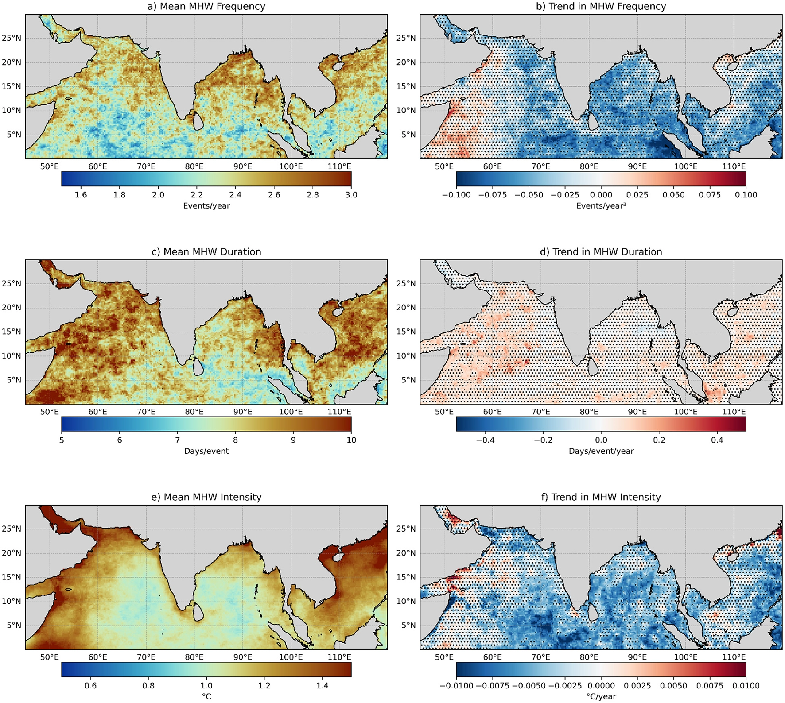
1982—2024 年海洋热浪特征的空间分布：（a）年平均事件频率（次/年），（b）频率线性趋势（次/年²），（c）平均持续时间（日/事件），（d）持续时间趋势（日/事件/年），（e）平均强度（°C），以及（f）强度趋势（°C/年）。
Spatial maps of (a) mean annual frequency of MHW events (events/year), (b) linear trend in MHW frequency (events/year2), (c) mean duration of MHW events (days/event), (d) trend in MHW duration (days/event/year), (e) mean intensity of MHW events (°C), and (f) trend in MHW intensity (°C/year) over the period 1982–2024.
阴影线表示依据双尾线性回归检验、趋势未达到统计显著性（p > 0.05）的区域。
Hatching indicates regions where trends are not statistically significant (p > 0.05) based on a two-tailed linear regression test.
2.2 海洋热浪分类
2.2 Marine heat waves classification
海洋热浪通常定义为逐日 SST 异常连续至少 5 天超过随季节变化的第 90 百分位阈值的时段（Hobday et al., 2016）。
The MHWs are typically defined as periods when daily SST anomalies exceed the seasonally varying 90th percentile threshold for five or more consecutive days (Hobday et al., 2016).
这一阈值通常使用固定基线 气候态计算。
This threshold is usually computed using a fixed baseline climatology.
然而，最近的研究突出表明了这种方法的一个主要局限性。
However, recent studies have highlighted a key limitation of this approach.
随着全球SST的上升，相对于固定基线定义的MHW的频率可以人为地增加，导致"不寻常"成为"新常态"的(Jacox， 2019； Rosselló et al.， 2023； Amaya et al.， 2023； Capotondi et al.， 2024)。
As global SSTs rise, the frequency of MHWs defined relative to a fixed baseline can increase artificially, causing the “unusual” to become the “new normal” (Jacox, 2019; Rosselló et al., 2023; Amaya et al., 2023; Capotondi et al., 2024).
为了解决这一问题，有人提议，MHW的定义应取决于所评估的预期影响。
To address this, it has been proposed that the definition of MHWs should depend on the intended impact being assessed.
例如，在研究海洋生物的适应性等生物影响时，固定基线可能是适当的，因为它捕捉到相对于历史常态的绝对热应力。
For instance, when studying biological impacts such as the adaptability of marine organisms, a fixed baseline may be appropriate, as it captures absolute thermal stress relative to a historical normal.
相反，在评估气候影响、尤其是与大气反馈和降水有关的影响时，应采用移动基线或去趋势 SST 异常，以便更好地将阶段性极端事件与长期增暖分离。
In contrast, for assessing climate impacts, particularly those related to atmospheric feedbacks and precipitation, a moving baseline or detrended SST anomalies should be used to better isolate episodic extreme events from long-term warming.
最近的一些研究进一步建议保留“海洋热浪”一词，用于使用移动的气候态 (Amaya et al.， 2023)定义的事件。
Some recent studies have further recommended reserving the term “marine heatwave” for events defined using a moving climatology (Amaya et al., 2023).
在这项研究中，我们使用去趋势后的 SST异常来定义MHW。
In this study, we define MHWs using detrended SST anomalies.
当去趋势 SST 异常连续至少 5 天超过随季节变化的第 90 百分位时，该事件被识别为海洋热浪。
An event is identified as an MHW when the detrended SST anomaly exceeds the seasonally varying 90th percentile for at least five consecutive days.
百分位阈值和异常值是用1982年至2024年的整个时期计算的。
The percentile threshold and the anomalies are calculated using the full 1982–2024 period.
首先采用以当日为中心的 11 天移动窗口构建季节气候态，以捕捉逐日变率。
A seasonal climatology is first constructed using an 11-day centered moving window to capture day-to-day variability.
随后用 31 天二项式滤波器对该气候态进行平滑，以保证时间连续性并降低高频噪声（Hobday et al., 2016）。
Then this climatology is smoothed using a 31-day binomial filter to ensure temporal coherence and reduce high-frequency noise (Hobday et al., 2016).
使用去趋势后的 SST异常计算出的MHW关键度量的平均值和线性趋势，包括频率，持续时间和平均强度，见图 1。
The mean and linear trends of key MHW metrics, including the frequency, duration, and mean intensity, computed using the detrended SST anomalies, are shown in Figure 1.
MHW事件的频率在孟加拉湾比阿拉伯海更高，而阿拉伯海中的MHW则倾向于持续时间更长，显示较高的平均强度。
The frequency of MHW events is higher in the Bay of Bengal compared to the Arabian Sea, whereas the MHWs in the Arabian Sea tend to last longer and show higher mean intensity.
与采用固定基线并报告显著增加趋势的研究不同（Saranya et al., 2022; Chatterjee et al., 2022; Gao et al., 2022; Kumar et al., 2023），基于去趋势 SST 时，我们并未在这些指标中观察到大范围统计显著趋势，但仍出现了一些区域性特征。
Although we do not observe widespread statistically significant trends in these metrics based on detrended SSTs, unlike studies using a fixed baseline that report significant increases (Saranya et al., 2022; Chatterjee et al., 2022; Gao et al., 2022; Kumar et al., 2023), but some regional patterns emerge.
特别是，MHW持续时间显示阿拉伯海的某些部分有显著增长的趋势，而孟加拉湾的强度则显著下降。
In particular, MHW duration shows a significant increasing trend across some portion of the Arabian Sea, while the Bay of Bengal exhibits a significant decrease in MHW intensity.
为理解并量化去除 SST 趋势对识别海洋热浪的重要性，下面以 OISST 为例说明。
To understand and quantify the importance of detrending SSTs in the identification of MHWs, we present the following example using OISST.
我们关注阿拉伯海和孟加拉湾的海盆尺度海洋热浪事件，其定义为覆盖至少 25% 的海盆且连续持续至少 15 天的事件。
We focus on basin-scale MHW events, defined as those covering at least 25% of the basin and lasting for a minimum of 15 consecutive days, in both the Arabian Sea and the Bay of Bengal.
采用去趋势 SST 异常时，我们在阿拉伯海识别出 20 个事件、在孟加拉湾识别出 17 个事件；采用原始（未去趋势）SST 时则分别为 17 个和 24 个。
Using detrended SST anomalies, we identified 20 events in the Arabian Sea and 17 in the Bay of Bengal, compared to 17 and 24 events, respectively, using raw (non-detrended) SSTs.
值得注意的是，2010 年以前，采用去趋势异常在阿拉伯海和孟加拉湾分别识别出 12 个和 9 个海洋热浪事件，而采用未去趋势 SST 时仅分别识别出 1 个和 2 个。
Notably, before 2010, 12 MHW events were detected in the Arabian Sea and 9 in the Bay of Bengal using detrended anomalies, whereas only 1 and 2 events, respectively, were identified using non-detrended SSTs.
相反，2010 年以后，采用去趋势资料在两个海盆均识别出 8 个事件，而采用原始 SST 时在阿拉伯海和孟加拉湾分别识别出 16 个和 22 个事件。
In contrast, after 2010, 8 events were identified in each basin using detrended data, while 16 events in the Arabian Sea and 22 in the Bay of Bengal were found using raw SSTs.
这清楚地表明，如果不消除长期变暖趋势，可能导致高估最近的MHW频率。
This clearly illustrates that failing to remove long-term warming trends can lead to an overestimation of recent MHW frequency.
例如，仅 2023 年一年，采用原始 SST 时阿拉伯海和孟加拉湾分别识别出 202 个和 93 个海洋热浪日，而采用去趋势异常时分别仅为 55 天和 0 天。
For instance, in 2023 alone, 202 MHW days were identified in the Arabian Sea and 93 in the Bay of Bengal using raw SSTs, compared to only 55 and 0 days, respectively, using detrended anomalies.
这些结果强调，必须去除趋势，才能刻画阶段性高温极端，而不是长期背景增暖。
These results underscore the necessity of detrending to accurately characterize episodic heat extremes rather than long-term background warming.
2.3 气候指数
2.3 Climate indices
为评估 ENSO 和 IOD 等大尺度自然气候变率模态的影响，我们采用 Niño-3.4 指数（代表 ENSO）和偶极模态指数（DMI，代表 IOD）。
To assess the influence of large-scale modes of natural climate variability, such as the ENSO and the IOD, we utilize the Niño-3.4 index (for ENSO) and the Dipole Mode Index (DMI, for the IOD).
Niño-3.4 指数定义为 Niño-3.4 区域（5°N—5°S，170°—120°W）相对于 1981—2010 年气候态的区域平均 SST 异常。
The Niño-3.4 index is defined as the area-averaged SST anomalies over the Niño-3.4 region (5°N–5°S, 170°–120°W), relative to a 1981–2010 climatology.
DMI 表示赤道印度洋西部（50°—70°E，10°S—10°N）与赤道印度洋东南部（90°—110°E，10°S—0°）之间的异常 SST 梯度。
The DMI represents the anomalous SST gradient between the western equatorial Indian Ocean (50°–70°E, 10°S–10°N) and the southeastern equatorial Indian Ocean (90°–110°E, 10°S–0°).
这两个指数均来自NOAA物理科学实验室(NOAA PSL)，该实验室使用HadISST1.1数据集(Rayner et al.， 2003)计算。
Both indices are obtained from the NOAA Physical Sciences Laboratory (NOAA PSL), where they are computed using the HadISST1.1 dataset (Rayner et al., 2003).
3 北印度洋海洋热浪变率
3 Variability of marine heatwaves in the North Indian Ocean
为理解北印度洋海洋热浪变率，我们对由海洋热浪事件期间去趋势 SST 异常得到的逐日海洋热浪强度（海洋热浪期间的 SST）进行了经验正交函数（EOF）分析。
To understand the variability of MHWs in the North Indian Ocean, we performed an Empirical Orthogonal Function (EOF) analysis on daily MHW intensity (SST during MHW), derived from detrended SST anomalies during MHW events.
识别出两个主导模态，其空间型及相应的标准化主成分（PC）见图 2。
Two dominant modes were identified, and their spatial patterns along with the corresponding normalized principal components (PC) are shown in Figure 2.
第一模态解释约 22% 的总方差，呈全盆地型，中部和西南阿拉伯海的海洋热浪强度较高，突出显示该区域是强海洋热浪事件的热点。
The first mode, which explains approximately 22% of the total variance, exhibits a basin-wide pattern characterized by high MHW intensity across the central and southwest Arabian Sea, highlighting this region as a hotspot of strong MHW events.
第二模态在阿拉伯海（北部除外）和孟加拉湾之间呈偶极型：一个海盆的海洋热浪活动受抑（蓝色阴影）时，另一个海盆的活动增强，反之亦然。
The second mode displays a dipole-like structure between the Arabian Sea (except north) and the Bay of Bengal regions, showing suppressed MHW activity (blue shading) in one basin, coinciding with enhanced activity in the other, and vice versa.
与模式1不同的是，规范化的PC时间序列模式2在正位相和负位相(相对模式1)之间表现出更加对称的分布，暗示两个盆地之间的MHW交替主导，尽管正位相事件发生频率比负位相要高一些。
Unlike Mode 1, the normalized PC time series of Mode 2 displays a more symmetric distribution between positive and negative phases (relative to Mode 1), suggesting alternating dominance of MHWs between the two basins, although positive events occur somewhat more frequently than negative ones.
该模态解释约 8% 的总方差。
This mode explains approximately 8% of the total variance.
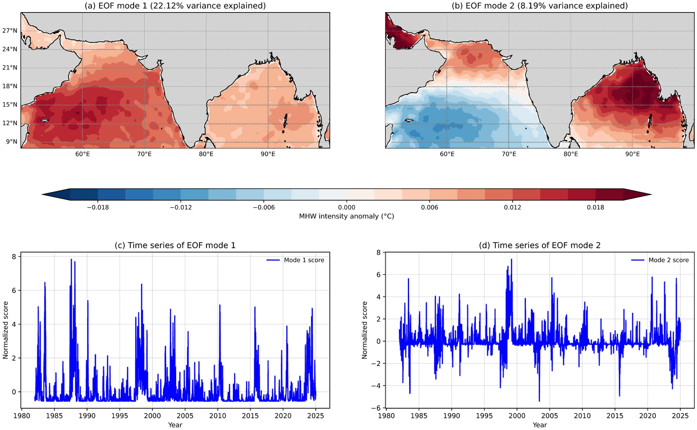
利用 ERA5 SST 对北印度洋海洋热浪强度进行经验正交函数（EOF）分析（基于全年所有月份的逐日资料，不限于 JJAS）：（a）第一模态空间型；（b）第二模态空间型；（c）第一模态对应的标准化主成分时间序列；（d）第二模态对应的标准化主成分时间序列。
Empirical Orthogonal Function (EOF) analysis of the MHW intensity in the North Indian Ocean using ERA5 SST (based on daily data for all months, not limited to JJAS). (a) Spatial pattern of the leading mode (Mode 1). (b) Spatial pattern of the second mode (Mode 2). (c) Normalized principal component time series corresponding to Mode 1. (d) Normalized principal component time series corresponding to Mode 2.
以往的研究表明，ENSO和IOD等大规模自然气候变异模式可以强烈影响MHW (see Capotondi et al.， 2024； for a recent review； Gao et al.， 2022； Chatterjee et al.， 2022； Swetha et al.， 2025； Sandaruwan et al.， 2023)的频率，强度和持续时间。
Previous studies have shown that large-scale natural climate variability modes, such as the ENSO and the IOD, can strongly influence the frequency, intensity, and duration of MHWs (see Capotondi et al., 2024; for a recent review; Gao et al., 2022; Chatterjee et al., 2022; Swetha et al., 2025; Sandaruwan et al., 2023).
为探讨这些关系，我们计算了两个主导模态的 PC 与 Niño 3.4 指数（代表 ENSO）及偶极模态指数（DMI，代表 IOD）之间的月尺度超前—滞后相关。
To explore these relationships, we computed monthly lead-lag correlations between the PCs of the two dominant modes and the Niño 3.4 index (representing ENSO) and the Dipole Mode Index (DMI, representing the IOD).
结果见图 3。
The results are shown in Figure 3.
当 Niño 3.4 超前约 5 个月时，PC1 与 Niño 3.4 的相关系数最高（0.5）。
The highest correlation (0.5) is observed between PC1 and Niño 3.4 when Niño 3.4 leads by approximately 5 months.
这表明，以PC1为代表的全流域MHW图案可能与ENSO的成熟期相连。
This suggests that the basin-wide MHW pattern represented by PC1 may be linked to the mature phase of ENSO.
这种关系与印度洋全盆模态（IOBM）一致；在该模态中，ENSO 以数月滞后诱发印度洋全盆地增暖（Klein et al., 1999; Xie et al., 2009; Guo et al., 2017）。
This relationship is consistent with the Indian Ocean Basin Mode (IOBM), where ENSO induces basin-wide warming in the Indian Ocean with a few months lag (Klein et al., 1999; Xie et al., 2009; Guo et al., 2017).
PC1与尼诺3.4之间强烈的滞后关系，加上与IOBM的相似性，说明北印度洋的全流域MHW基本上可以通过印度洋盆地模式由ENSO调节。
The strong lagged correlation between PC1 and Niño 3.4, along with the similarity to the IOBM, suggests that basin-wide MHWs in the North Indian Ocean can be largely modulated by ENSO via the Indian Ocean Basin Mode.
这与 Chatterjee et al.（2022）一致；该研究表明，阿拉伯海 70–80% 的海洋热浪在 ENSO 衰减期受到印度洋全盆模态影响。
This is consistent with Chatterjee et al. (2022) who showed that 70–80% of MHWs in the Arabian Sea are influenced by the Indian Ocean Basin mode through the decaying phase of ENSO.
当 DMI 超前约 2 个月时，PC1 与 DMI 呈较弱但明显的相关（0.3）。
PC1 also shows a weaker but noticeable correlation with DMI (0.3) when DMI leads by about 2 months.
然而，Niño 3.4 与 DMI 的相关也在这一滞后达到峰值，因此 PC1—DMI 相关可能只是反映 ENSO 对 IOD 的影响，而非 IOD 本身的独立作用（统计去除 Niño 3.4 影响后 DMI 与 PC 时间序列的超前—滞后偏相关见补充图 S1）。
However, since the correlation between Niño 3.4 and DMI also peaks at this lag, the PC1-DMI correlation may simply reflect the influence of ENSO on the IOD rather than an independent effect of the IOD itself (see Supplementary Figure S1 for lead–lag partial correlation between the DMI and the PC time series after statistically removing the influence of Niño 3.4).
类似地，PC2 与 Niño 3.4 的相关弱于 PC1。
Similarly, the PC2 correlation with Niño 3.4 is relatively less compared to PC1.
当 PC2 超前 Niño 3.4 约 2 个月时，相关系数达到最大值（−0.3），提示 PC2 与拉尼娜存在联系。
The maximum correlation (–0.3) occurs when PC2 leads Niño 3.4 by about 2 months, suggesting a link between PC2 and La-Niña.
这些发现表明，大尺度气候模态，尤其是 ENSO，可能在驱动北印度洋海洋热浪变率方面发挥关键作用。
These findings imply that large-scale climate modes, particularly ENSO, might play a crucial role in driving the variability of MHWs in the North Indian Ocean.
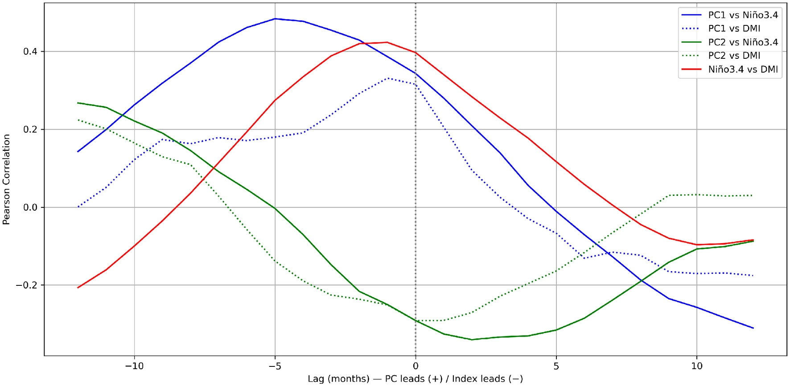
PC（转换为月尺度）与气候指数之间的超前—滞后相关。
Lead-lag correlations between the PCs (converted to monthly) and climate indices.
蓝线和绿线分别表示涉及 PC1 和 PC2 的相关。
Blue and green lines represent correlations involving PC1 and PC2, respectively.
实线表示与 Niño 3.4 的相关，虚线表示与 DMI 的相关。
Solid lines denote correlations with Niño 3.4, while dashed lines denote correlations with the DMI.
红线表示 Niño 3.4 与 DMI 的相关。
The red line shows the correlation between Niño 3.4 and DMI.
负滞后表示气候指数超前 PC，正滞后表示 PC 超前指数。
Negative lags indicate the climate index leads the PC, while positive lags indicate the PC leads the index.
为了进一步调查ENSO–MHW的关系，图 4显示了MHW在厄尔尼诺，中性，拉尼娜条件下的频率。
To further investigate the ENSO–MHW relationship, Figure 4 shows the frequency of MHWs during El Niño, neutral, and La Niña conditions.
厄尔尼诺期间，阿拉伯海中部和南部的海洋热浪频率升高，而孟加拉湾的频率相对较低，与 PC1 和 PC2− 模态的空间结构非常相似。
During El Niño, MHW frequency is enhanced over the central and southern Arabian Sea, with comparatively lower frequencies over the Bay of Bengal, closely resembling the spatial structure of the PC1 and PC2- modes.
相比之下，拉尼娜期间的MHW频率一般比厄尔尼诺期间弱，但显示在孟加拉湾和北阿拉伯海之上显示最大值，与PC2模式的正位相一致。
In contrast, MHW frequency during La Niña is generally weaker than during El Niño but exhibits pronounced maxima over the Bay of Bengal and the northern Arabian Sea, consistent with the positive phase of the PC2 mode.
这些空间对应关系进一步支持我们的推断：PC1 和 PC2− 事件通常发生在厄尔尼诺年，而 PC2 正位相事件在拉尼娜年更常见。
These spatial correspondences provide further support for our inference that PC1 and PC2- events usually occur during El Niño years, whereas positive PC2 events are more prevalent during La Niña years.
以下各节将更详细地审查每一种模式背后的物理驱动因素。
The physical drivers underlying each mode are examined in greater detail in the following sections.
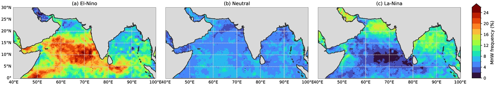
印度洋在不同 ENSO 位相下的海洋热浪频率（%）。（a—c）分别显示厄尔尼诺、中性和拉尼娜条件下海洋热浪频率的空间分布。
MHW frequency (%) during different ENSO phases over the Indian Ocean. (a–c) Show the spatial distribution of MHW frequency during El Niño, Neutral, and La Niña conditions, respectively.
色标表示各 ENSO 位相中被判定为海洋热浪的时间步所占百分比。
The color scale indicates the percentage of time steps classified as marine heatwaves within each ENSO phase.
4 北印度洋海洋热浪模态的驱动因素
4 The drivers of marine heatwaves modes in the North Indian Ocean
为分析北印度洋海洋热浪变率两个主导模态的驱动因素，我们依据逐日标准化海洋热浪强度 PC 时间序列识别极端事件（图 2c、d）。
To analyze the drivers of the two dominant modes of MHW variability in the North Indian Ocean, we identified extreme events based on the daily normalized MHW-intensity based PC time series (Figures 2c, d).
当 PC 连续至少 5 天超过随季节变化的第 90 百分位（模式 2 负位相则低于第 10 百分位）时，选为事件；这与海洋热浪定义一致。
Events were selected when the PC exceeded the seasonally varying 90th percentile (or was below the 10th percentile for the negative phase of Mode 2) for at least five consecutive days, consistent with the definition of MHWs.
我们的分析仅限于南亚季风季(6月至9月)发生的事件，符合我们评估其对南亚季风降水的影响的目标。
Our analysis is restricted to events occurring during the South Asian Monsoon season (June-September), aligning with our objective of assessing their influence on South Asian monsoon rainfall.
北印度洋海洋热浪的第一模态（PC1）对应全盆地型，海洋热浪覆盖整个区域，且阿拉伯海的强度尤其高（图 2a）。
The leading mode of MHWs (PC1) in the North Indian Ocean corresponds to a basin-wide pattern, with MHWs covering the entire region and particularly high intensity in the Arabian Sea (Figure 2a).
我们识别出 16 个不同事件，其中 PC1 时间序列连续至少 5 天超过随季节变化的第 90 百分位。
We identified 16 distinct events in which the PC1 time series exceeded the seasonally varying 90th percentile for at least five consecutive days.
这些事件的开始日期、结束日期和持续时间见补充表 S1。
The start dates, end dates, and durations of these events are provided in Supplementary Table S1.
这些 PC1 模态海洋热浪事件持续 5—59 天，中位持续时间为 10 天，平均持续时间约 19 天。
These PC1-mode MHW events lasted between 5 and 59 days, with a median duration of 10 days and a mean duration of approximately 19 days.
有趣的是，最近 3 个事件的持续时间均超过 20 天。
Interestingly, the latest three events show a duration above 20 days.
值得注意的是，16 个事件中有 10 个发生在厄尔尼诺期间或厄尔尼诺之后 5 个月内。
Notably, 10 events out of 16 occurred during El Niño or within 5 months after El-Nino.
将 PC1 时间序列回归到 SST 上（补充图 S2a）可得到类似厄尔尼诺的 SST 型，进一步支持该海洋热浪模态与厄尔尼诺条件之间的联系。
Regression of the PC1 time series onto SST (Supplementary Figure S2a) reveals an El Niño-like SST pattern, further supporting the association between this MHW mode and El Niño conditions.
与模式 1 的全盆地结构不同，模式 2 正位相（PC2+）呈东西偶极型：海洋热浪集中在孟加拉湾，而阿拉伯海中部和南部没有海洋热浪（图 2b）。
In contrast to the basin-wide structure of Mode 1, the positive phase of Mode 2 (PC2+) displays an eastwest dipole, with MHWs focused in the Bay of Bengal and an absence of MHWs in the central and southern Arabian Sea (Figure 2b).
共识别出 34 个 PC2+ 事件（补充表 S2），最常见于厄尔尼诺向拉尼娜的转换期；持续时间为 5—35 天，平均 12 天、中位数 10 天。
We identify 34 PC2+ events (Supplementary Table S2), most commonly during the El Niño to La Niña transition phase, with durations ranging from 5 to 35 days (mean of 12 days and median of 10 days).
模式 2 负位相（PC2−）使东西偶极型反转：海洋热浪活动集中在阿拉伯海中部和南部，而孟加拉湾没有活动。
The negative phase of Mode 2 (PC2−) reverses the eastwest dipole, with MHW activity concentrated in the central and southern Arabian Sea and absent in the Bay of Bengal.
根据 PC2 时间序列连续至少 5 天低于随季节变化的第 10 百分位，共识别出 22 个此类事件（补充表 S3）。
A total of 22 such events were identified based on the PC2 time series falling below the seasonally varying 10th percentile for at least five consecutive days (Supplementary Table S3).
在这22个事件中，有8个发生在厄尔尼诺的早期阶段，表明厄尔尼诺对PC2−的影响力虽然可能但较弱，而PC1则与厄尔尼诺的成熟阶段更紧密相关。
Out of these 22 events, 8 occur during the early phase of El Niño, suggesting a possible but weaker influence of El Niño on PC2− compared to PC1, which is more strongly associated with the mature phase of El Niño.
4.1 海洋热浪期间的 SST 与降水
4.1 SST and precipitation during marine heatwaves
不同 EOF 模态所选极端事件期间，去趋势 SST 与降水的合成异常及叠加的 10 米风见图 5。
The composite anomalies of detrended SST and precipitation overlaid with 10-meter winds during the selected extreme events for different EOF modes are shown in Figure 5.
正如 PC1 空间型所示，整个北印度洋（包括阿拉伯海和孟加拉湾）均出现显著正 SST 异常。
As expected from the PC1 spatial pattern, SST anomalies are strongly positive across the North Indian Ocean, including the Arabian Sea and the Bay of Bengal.
阿拉伯海的增暖最强（图 5a）。
The strongest warming is observed in the Arabian Sea (Figure 5a).
相应的降水和 10 米风异常表明季风风减弱（异常北风或减弱的南风）；阿拉伯海东部、孟加拉湾南部和印度南部部分地区降水增加，而印度中部、东北部及孟加拉湾北部降水受抑（图 5d）。
The corresponding precipitation and 10-meter wind anomalies indicate weakening of monsoon winds (anomalous Northerly winds or weakened Southerly winds) and enhanced rainfall over the eastern Arabian Sea, southern Bay of Bengal and parts of southern India, while central and northeastern India and north of the Bay of Bengal exhibit suppressed precipitation (Figure 5d).
尽管 SST 异常与正 IOD 事件期间的典型型态有些相似，但相应风场偏离了 IOD 的标准结构；后者以跨赤道季风风增强为特征（Prajeesh et al., 2021）。
Although the SST anomalies somewhat resemble those typically observed during a positive IOD event, the associated wind patterns deviate from the canonical IOD structure, which is characterized by strengthened cross-equatorial monsoon winds (Prajeesh et al., 2021).
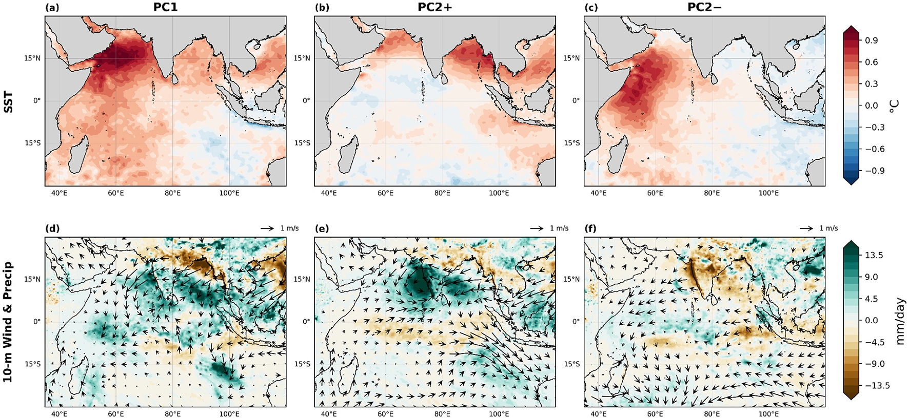
海洋热浪事件期间的 SST（上排；°C）、降水（下排，阴影；mm day−1）和 10 米风矢量（箭头；m s−1）合成异常：（a、d）PC1、（b、e）PC2+、（c、f）PC2− 位相。
Composite anomalies of SST (top row; °C), precipitation (bottom row; shading; mm day−1), and 10 m wind vectors (arrows; m s−1) during MHW events associated with (a, d) PC1, (b, e) PC2+, and (c, f) PC2− phases.
PC2+ 事件的 SST 合成异常显示，孟加拉湾和阿拉伯海北部部分区域强烈增暖，而阿拉伯海南部的 SST 异常保持中性或略为负值（图 5b）。
The composite SST anomalies during PC2+ events show intense warming over the Bay of Bengal and parts of the northern Arabian Sea, while southern Arabian Sea SST anomalies remain neutral or slightly negative (Figure 5b).
这种增暖伴随阿拉伯海东南部的气旋性风异常，以及印度南部和阿拉伯海东部的降水增强（图 5e）。
This warming is accompanied by cyclonic wind anomalies over the southeastern Arabian Sea and enhanced rainfall over southern India and the eastern Arabian Sea (Figure 5e).
这与Saranya et al. (2022)一致，这表明孟加拉湾中的MHW与印度西南部的降水增加有关。
This is in agreement with Saranya et al. (2022), which shows that the MHW in the Bay of Bengal is associated with enhanced rainfall over southwest India.
与PC1相比，降水异常较为剧烈但空间集中，特别是在印度南部。
Compared to PC1, the rainfall anomalies are more intense but spatially concentrated, especially over the southern part of India.
该模态负位相的特征是西印度洋出现显著 SST 异常（图 5c）、该区域风力较弱，并且印度大范围偏干（图 5f）。
The negative of this mode is characterized by pronounced SST anomalies in the western Indian Ocean (Figure 5c), weak winds over the region, and widespread dry anomalies across India (Figure 5f).
不同于前两个模态，该位相与印度次大陆大部季风活动受抑有关，可能源于低层季风环流减弱和缺少水汽辐合。
Unlike the previous two modes, this phase is associated with suppressed monsoon activity across much of the Indian Subcontinent, likely due to weakened low-level monsoon circulation and the absence of moisture‘convergence.
4.2 海洋热浪以前的大气条件
4.2 Atmospheric conditions before marine heatwaves
为理解这些海洋热浪事件的驱动机制，我们针对所选三个 EOF 模态，对每次海洋热浪事件发生前 5 天的大气条件进行了合成分析（图 6）。
To understand the mechanisms driving these MHW events, we performed a composite analysis of atmospheric conditions during the five days prior to each MHW event for the three selected EOF modes (Figure 6).
变量包括MSLP，表面风，表面潜热通量(正向下)，短波辐射通量(正向下)和降水。
The variables include MSLP, surface wind, surface latent heat flux (positive downward), shortwave radiation flux (positive downward), and precipitation.
感热通量和长波辐射对 PC1、PC2 的贡献（合成图见补充图 S3）均比短波辐射和潜热通量的贡献小一个数量级。
Sensible heat flux and longwave radiation contributions to PC1 and PC2 (see composite maps in Supplementary Figure S3), are much smaller (by an order of magnitude) as compared with both shortwave radiation and latent heat flux contributions.
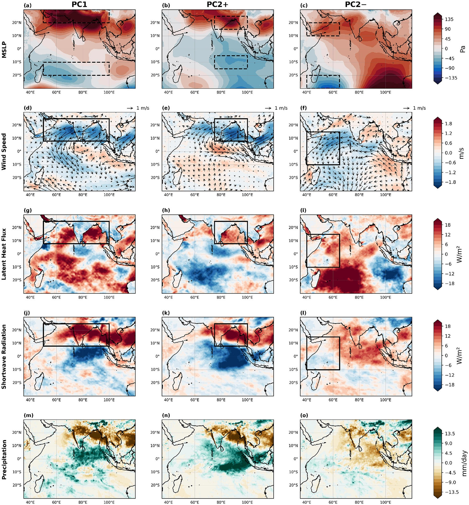
不同模态海洋热浪发生前 5 天平均的合成异常：PC1（左列）、PC2+（中列）和 PC2−（右列）。
Composite anomalies averaged over the 5 days preceding MHW onset for different modes: PC1 (left column), PC2+ (middle column), and PC2− (right column).
各面板依次为：（a—c）海平面气压异常（Pa）；（d—f）10 米风速异常（阴影；m s−1）及风矢量异常（箭头）；（g—i）潜热通量异常（W m−2，向下为正）；（j—l）短波辐射异常（W m−2，向下为正）；（m—o）降水异常（mm day−1）。
Panels show (a–c) mean sea level pressure anomalies (Pa), (d–f) 10 m wind speed anomalies (shading; m s−1) with wind vector anomalies (arrows), (g–i) latent heat flux anomalies (W m−2; positive downward), (j–l) shortwave radiation anomalies (W m−2; positive downward), and (m–o) precipitation anomalies (mm day−1).
方框表示计算时间序列空间平均所采用的区域（见图 7）。
Boxes indicate the domains used to compute spatial means for the time series analysis (see Figure 7).
对于 PC1 模态，阿拉伯海北部、印度次大陆、孟加拉湾和西北太平洋出现显著正 MSLP 异常，而南印度洋出现相应负异常（图 6a）。
For the PC1 mode, a strong positive anomalous MSLP is observed to the north of the Arabian Sea, Indian subcontinent, Bay of Bengal, and northwest Pacific, while a corresponding negative anomaly appears in the southern Indian Ocean (Figure 6a).
这种模式不利于夏季季风流，而季风流是由压力梯度驱动的:印度洋上空的高压和印度次大陆上空的低压。
This pattern is detrimental to the summer monsoon flow, which is driven by a pressure gradient: high pressure over the Indian Ocean and low pressure over the Indian subcontinent.
因此，这些异常削弱经向气压梯度并减弱西南季风风；跨赤道气流减弱清楚体现了这一点（图 6d）。
As a result, these anomalies weaken the meridional pressure gradient and reduce the strength of southwesterly monsoon winds, as evident in the weakened cross-equatorial wind flow (Figure 6d).
海表风减弱使蒸发减少，表现为海洋向大气的向上潜热通量减小（文中规定向下为正；图 6g）。
The weakening of surface winds reduces evaporation, which is reflected in the decreased upward latent heat flux (positive downwards) from the ocean to the atmosphere (Figure 6g).
蒸发率降低可能减少云量（补充图 S4），使更多入射短波辐射到达海表（图 6j）。
Lower evaporation rates could lead to fewer clouds (Supplementary Figure S4), allowing more incoming shortwave radiation to reach the ocean surface (Figure 6j).
这一辐射强迫与海气湍流热通量向大气输送的减弱共同作用，二者又都受风速减弱驱动，因而进一步增强上层海洋增暖。
This radiative forcing, combined with reduced air-sea turbulent heat fluxes to the atmosphere, in turn driven by reduced winds, further enhances upper-ocean warming.
较弱的风还会减弱风驱上层海洋混合，并可能促使海洋增暖。
The weaker winds can also reduce the wind-driven upper ocean mixing and have the potential to contribute to the ocean warming.
降水型表现为印度西部、中部及孟加拉湾以北偏干，赤道印度洋东部偏湿。
The precipitation pattern shows dry conditions over western and central India and north of the Bay of Bengal, and wet conditions in the eastern equatorial Indian Ocean.
PC2+ 型海洋热浪的大气前兆同样表现为季风气压梯度反转，但强异常更加局限于孟加拉湾。
The atmospheric precursors of PC2+ mode MHWs also feature a reversal in the monsoon pressure gradient but with more localized intensity over the Bay of Bengal.
强海平面气压正异常中心位于孟加拉湾北部和西北太平洋，而印度洋东南部持续存在一个强低压异常（图 6b）。
Strong positive sea-level pressure anomalies are centered over the northern Bay of Bengal and the northwest Pacific, while a deep low persists over the southeastern Indian Ocean (Figure 6b).
与 PC1 相比，东部海盆的气压梯度变化更陡，使孟加拉湾海表风减弱更为明显（图 6e）。
Compared to PC1, the gradient is sharper in the eastern basin, leading to more pronounced weakening of surface winds over the Bay of Bengal (Figure 6e).
这会抑制蒸发和向上潜热通量，使云量减少，进而增加太阳辐射并增强上层海洋增暖（图 6h、k）。
This suppresses evaporation and upward latent heat flux, inducing reduced cloud cover and, in turn, increased solar radiation to enhance warming of the upper ocean (Figures 6h, k).
这一海气反馈（尤其是潜热和短波通量）局限在孟加拉湾，解释了该模态海洋热浪为何偏向东部。
The spatial confinement of this air-sea feedback (particularly the latent and shortwave flux) over the Bay of Bengal explains the eastward focus of MHWs in this mode.
降水模式显示孟加拉湾以北的干旱条件和东赤道印度洋(图 6n)的湿润条件。
The precipitation pattern shows dry conditions north of the Bay of Bengal and wet conditions in the eastern equatorial Indian Ocean (Figure 6n).
对于PC2-模式，复合大气异常揭示出一个独特的压力结构。
For the PC2- mode, the composite atmospheric anomalies reveal a distinct pressure structure.
整个北印度洋均出现正 MSLP 异常，靠近海湾地区的阿拉伯海东部异常较高，而西南印度洋出现相应低压异常（图 6c）。
Elevated MSLP anomalies appear entirely over the north Indian Ocean, with high values over the eastern Arabian Sea near the Gulf region, with a corresponding low in the southwestern Indian Ocean (Figure 6c).
这一配置再次对抗典型季风气压梯度，使跨赤道风减弱；这一次主要发生在西部海盆（图 6f）。
This configuration again opposes the typical monsoon pressure gradient, weakening the cross-equatorial winds, this time primarily over the western basin (Figure 6f).
风速降低使蒸发和潜热损失受到抑制（图 6i），与海表增暖一致。
Reduced wind speeds lead to suppressed evaporation and latent heat loss (Figure 6i), consistent with sea surface warming.
然而，与其他模态不同，该区域短波辐射并未显著增强，说明此处海洋热浪形成主要由湍流冷却受抑而非辐射强迫所驱动（图 6l）。
However, unlike the other modes, there is no substantial enhancement in shortwave radiation in this region, suggesting that MHW formation here is primarily driven by suppressed turbulent cooling rather than radiative forcing (Figure 6l).
此外，西印度洋索马里沿岸近岸风减弱可抑制上升流，从而可能减弱上升流引起的冷却，并促使该区域 SST 升高。
Furthermore, the weakening of nearshore winds along the Somali coast in the western Indian Ocean can suppress upwelling, thereby having the potential to reduce upwelling-induced cooling and contribute to elevated SSTs in the region.
降水异常表明整个印度的干旱条件(图 6o)。
The precipitation anomaly shows dry conditions throughout India (Figure 6o).
这些合成异常型与季风季节内振荡（MISO）相关型高度相似，PC1 和 PC2 正位相尤其如此，提示 MISO 可能参与调节海洋热浪。
The composite anomaly patterns exhibit striking similarities to those associated with the Monsoon Intra-Seasonal Oscillation (MISO), particularly for the positive phases of PC1 and PC2, suggesting a potential role of MISO in modulating MHWs.
因此，MISO对MHW变异性的影响在接下来的一节中审查。
Therefore, the influence of MISO on MHW variability is examined in a subsequent section.
4.3 海洋热浪发生前大气驱动因素与 SST 的演变
4.3 Evolution of atmospheric drivers and SST leading to marine heatwaves
图 7 显示了海洋热浪热点区域内 SST 和大气变量相对于海洋热浪发生时刻的演变。
The evolution of SST and atmospheric variables across the MHW hotspot regions relative to MHW onset is shown in Figure 7.
对于 PC1 模态，SST 异常约在海洋热浪发生前 8 天开始出现（图 7a）；在此之前，经向 MSLP 梯度已提前减弱——该梯度按相同经度平均的 30°S—20°S 与 10°N—20°N 之间经向差计算——最早从发生前 16 天开始，约在前 8 天变得明显（图 7b）。
For the PC1 mode, SST anomalies begin to emerge roughly 8 days prior to the MHW onset (Figure 7a), following an early weakening of the meridional MSLP gradient (calculated as the meridional difference between 30°S–20°S and 10°N–20°N, averaged along the same longitude), starting up to 16 days before onset and becoming pronounced around 8 days before the onset (Figure 7b).
风速同步下降，进一步减少海表蒸发（图 7c）。
Wind speeds decline in parallel, further reducing surface evaporation (Figure 7c).
潜热通量异常在发生前 6 天达到峰值（图 7d），与湍流冷却减弱一致。
Latent heat flux anomalies peak 6 days prior (Figure 7d), consistent with diminished turbulent cooling.
同时，短波辐射稳步增加，在发生前达到峰值，并在发生后维持偏高（图 7e）。
Meanwhile, shortwave radiation increases steadily, peaking before onset and staying elevated afterward (Figure 7e).
关键变量间的相关性分析支持这一假设。
The correlation analysis between key variables supports this hypothesis.
MSLP 与风速呈强正相关（滞后 0 时 r = 0.9），风速与潜热通量则呈强负相关（滞后 0 时 r = −0.8）。
A strong positive correlation is observed between MSLP and wind speed (r = 0.9 at lag 0), while wind speed and latent heat flux exhibit a strong negative correlation (r = -0.8 at lag 0).
此外，潜热通量与短波辐射(r=0.9)密切相关。
Additionally, latent heat flux is strongly correlated with shortwave radiation (r = 0.9).
短波辐射与 SST 呈显著正相关（r = 0.8），滞后为 5 天。
Shortwave radiation and SST show a significant positive correlation (r = 0.8) with a lag of 5 days.
此外，SST 与 MSLP、风速和潜热通量等其他变量也具有类似的高相关，滞后均为 5 天，凸显这些变量在调节 SST 变率中的潜在作用。
Moreover, SST demonstrates similarly high correlations with other variables, including MSLP, wind speed, and latent heat flux, all with a lag of 5 days, highlighting their potential roles in modulating SST variability.
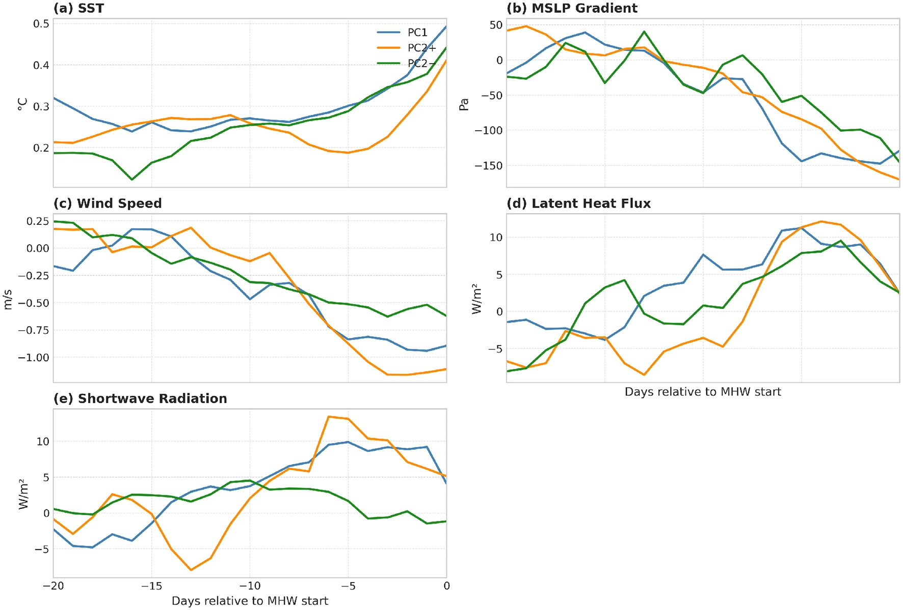
北印度洋 PC1（蓝色）、PC2+（橙色）和 PC2−（绿色）模态海洋热浪发生相关合成异常的时间序列。
Time series of composite anomalies associated with MHW onset in the North Indian Ocean for PC1 (blue), PC2+ (orange), and PC2- (green) modes.
空间平均区域为图 6 方框所示：PC1 为 8°—25°N、50°—100°E；PC2 正位相为 8°—25°N、75°—100°E；PC2 负位相为 10°S—15°N、40°—65°E。对于（b），各模态海平面气压梯度按图 6 虚线框中南、北纬度带的经向差计算：PC1 为 10°S—20°S 与 20°—30°N（50°—100°E 平均）；PC2 正位相为 5°S—15°S 与 15°—25°N（75°—100°E 平均）；PC2 负位相为 20°S—30°S 与 10°—20°N（40°—65°E 平均）。（a）SST 异常（°C）；（b）海平面气压梯度异常（Pa）；（c）10 米风速异常（m/s）；（d）潜热通量异常（W/m，向下为正）；（e）短波辐射异常（W/m，向下为正）。
Spatial means were computed over the boxed regions shown in Figure 6: PC1 over 8°–25°N, 50°–100°E; PC2-positive over 8°–25°N, 75°–100°E; and PC2-negative over 10°S–15°N, 40°–65°E. For (b), the mean sea level pressure gradient was calculated for each mode as the meridional difference between the southern and northern bands (dashed boxes in Figure 6): PC1: 10°S–20°S and 20°–30°N (averaged over 50°–100°E), PC2-positive: 5°S–15°S and 15°–25°N (averaged over 75°–100°E), and PC2-negative: 20°S–30°S and 10°–20°N (averaged over 40°–65°E). (a) Sea surface temperature anomaly (°C). (b) Mean sea level pressure gradient anomaly (Pa). (c) 10-meter wind speed anomaly (m/s). (d) Latent heat flux anomaly (W/m; positive downward). (e) Shortwave radiation anomaly (W/m; positive downward).
第 0 天对应海洋热浪发生日。
Day 0 corresponds to the MHW onset date.
在孟加拉湾（8°—25°N，75°—100°E），PC2+ 海洋热浪事件之前存在清晰的大气演变过程（图 7）。
For the Bay of Bengal (8°–25°N, 75°–100°E), PC2+ MHW events are preceded by a distinct atmospheric evolution (Figure 7).
SST 异常仅在发生前 4 天开始发展（图 7a），而 MSLP 梯度——按相同经度平均的 5°S—15°S 与 15°N—25°N 之间经向差计算——在更长时间窗内减弱：从发生前 20 天开始，并于前 9 天起显著下降（图 7b）。
SST anomalies begin to develop just 4 days before onset (Figure 7a), while the MSLP gradient (calculated as the meridional difference between 5°S–15°S and 15°N–25°N, averaged along the same longitude) weakens over a longer window, starting 20 days prior to the onset, with a marked decline beginning 9 days before (Figure 7b).
这一时期风速异常急剧下降（图 7c），使潜热损失受抑，并在发生前约 4 天达到峰值（图 7d）。
Wind speed anomalies sharply drop in this period (Figure 7c), triggering suppressed latent heat loss that peaks around 4 days before onset (Figure 7d).
短波辐射稳步增强（图 7e），其量级与潜热通量异常相近。
Shortwave radiation intensifies steadily (Figure 7e), with a magnitude similar to that of the latent heat flux anomaly.
尽管演变顺序与 PC1 相似，但孟加拉湾上空的大气异常更强且更局地化，从而强化了 PC2 正位相事件的区域强度和结构。
While the sequence mirrors PC1, the atmospheric anomalies are stronger and more localized over the Bay of Bengal, reinforcing the regional intensity and structure of PC2-positive events.
聚焦西印度洋（10°S—15°N，40°—65°E）的 PC2− 事件，其驱动因素演变呈现细微但重要的差异（图 7）。
The evolution of drivers for PC2- events focused on the western Indian Ocean (10°S–15°N, 40°–65°E), shows subtle yet important distinctions (Figure 7).
SST 异常早在海洋热浪发生前 16 天便开始累积（图 7a），而 MSLP 梯度约从发生前 2 周开始减弱（图 7b）。
SST anomalies begin building as early as 16 days prior to MHW onset (Figure 7a), with weakening of the MSLP gradient observed from around 2 weeks prior to the onset (Figure 7b).
风速从发生前 18 天开始缓慢、渐进下降（图 7c），导致蒸发减少和海洋向大气的潜热通量减小，并在发生前 4 天达到峰值（图 7d）。
Wind speeds begin a slower, more gradual decline from 18 days before onset (Figure 7c), leading to reduced evaporation and reduced latent heat fluxes from ocean to atmosphere, peaking 4 days before onset (Figure 7d).
短波辐射异常上升，但幅度仍相对温和，甚至在发生前几天下降（图 7e）。
Shortwave radiation anomalies rise but remain relatively moderate and even dip a few days before the onset (Figure 7e).
不同于另外两个模态，湍流热贡献大于辐射加热，说明潜热分量（以及上一节讨论的可能减弱的上升流）在驱动该模态时占主导。
Unlike the other two modes, turbulent heat contributions are higher compared to the radiative heating, suggesting a dominance of the latent heat component (and plausibly reduced upwelling, as discussed in the previous section) in driving this mode.
5 季风季节内振荡与海洋热浪
5 Monsoon intraseasonal oscillation and marine heatwaves
印度夏季风在 5—10 月表现出显著季节内变率，通常称为季风季节内振荡（MISO）（Goswami and Mohan, 2001; Rajeevan et al., 2010）。
The Indian summer monsoon exhibits pronounced intraseasonal variability from May to October, commonly referred to as the Monsoon Intraseasonal Oscillation (MISO) (Goswami and Mohan, 2001; Rajeevan et al., 2010).
MISO 的特征是活跃（湿）位相与中断（干）位相交替出现，每个位相通常持续数天。
MISO is characterized by alternating active (wet) and break (dry) phases, each typically persisting for several days.
多项研究表明，MISO-相关降水异常与SST可变性之间有双向相互作用，MISO相关大气强迫作用影响SST，SST异常作用反过来调节MISO降水(Kemball-Cook and Wang， 2001； Vecchi and Harrison， 2002； Fu et al.， 2003， 2007； Roxy and Tanimoto， 2007； Krishnamurthy and Kirtman， 2009； Zhang L. et al.， 2018)。
Numerous studies have demonstrated a two-way interaction between MISO-related precipitation anomalies and SST variability, whereby atmospheric forcing associated with MISO influences SST, and SST anomalies, in turn, modulate MISO rainfall (Kemball-Cook and Wang, 2001; Vecchi and Harrison, 2002; Fu et al., 2003, 2007; Roxy and Tanimoto, 2007; Krishnamurthy and Kirtman, 2009; Zhang L. et al., 2018).
例如，Vecchi and Harrison（2002）指出，孟加拉湾北部 SST 降低约超前季风中断位相 1 周；Roxy and Tanimoto（2007）则表明，阿拉伯海正 SST 异常超前于 MISO 活跃位相的降水增强。
For instance, Vecchi and Harrison (2002) showed that SST cooling in the northern Bay of Bengal precedes monsoon break phases by approximately 1 week, while Roxy and Tanimoto (2007) demonstrated that positive SST anomalies over the Arabian Sea lead enhanced precipitation during the active phase of MISO.
这些调查结果表明，与MISO-有关的海气相互作用也可能在MHW的开发和调制中发挥重要作用，本节将对此进行审查。
These findings suggest that MISO-related air-sea interactions may also play an important role in the development and modulation of MHWs, an aspect that is examined in this section.
MISO 位相采用扩展经验正交函数分析得到（Suhas et al., 2012）。
MISO phases are derived using Extended Empirical Orthogonal Function analysis (Suhas et al., 2012).
使用 ERA5 降水资料计算的 8 个 MISO 位相中降水、MSLP、近地面风和潜热通量合成异常（见补充图 S5—S8），与 Suhas et al.（2012）基于 IMD 资料得到的结果一致。
Composite anomalies of precipitation, MSLP, near-surface winds, and latent heat flux during the eight MISO phases, computed using the ERA5 rainfall data (see Supplementary Figures S5–S8), align with those shown by Suhas et al. (2012) using IMD data.
例如，MISO 第 1 位相期间，增强对流中心位于赤道附近，随后在后续位相中向北迁移。
For example, during MISO Phase 1, enhanced convection is centered near the equator, which then migrates northward over subsequent phases.
类似地，最初 4 个位相期间印度次大陆上空存在异常高压中心，随后位相中转变为低压。
Similarly, an anomalous high-pressure center is seen over the Indian subcontinent during the initial four phases, transitioning to low pressure in the later phases.
有趣的是，其中一些 MISO 合成型与不同海洋热浪 EOF 模态下海洋热浪发生前的条件相似。
Interestingly, some of these MISO composite patterns resemble the pre-MHW conditions seen in different EOF modes of MHWs.
例如，PC1 和 PC2+ 的降水异常型（见图 5）与 MISO 第 4、5 位相相似：增强对流集中在印度南部和孟加拉湾，而印度中部和孟加拉湾北部降水受抑。
For example, the precipitation anomaly patterns during PC1 and PC2+ (see Figures 5) are similar to those during MISO Phases 4 and 5, where enhanced convection is concentrated over the southern India and Bay of Bengal, with suppressed rainfall over central India and the northern Bay of Bengal.
同样，海洋热浪发生前 5 天的 MSLP 与降水异常（图 6）类似于 MISO 第 3 位相（补充图 S5、S6）。
Likewise, the MSLP and precipitation anomalies observed 5 days prior to MHW onset (Figure 6) resemble those seen during MISO Phase 3 (Supplementary Figures S5, S6).
为更系统地考察 MISO 与海洋热浪的相互作用，我们进一步分析了各 EOF 模态事件在海洋热浪发生前 10 天至发生后 10 天内各 MISO 位相逐日出现的百分比（补充图 S9）。
To examine the interaction between MISO and MHWs more systematically, we further analyzed the daily percentage occurrence of each MISO phase from 10 days before to 10 days after MHW onset for events in each EOF mode (Supplementary Figure S9).
在 PC1 中，可见 MISO 从第 1 位相（中心约位于第 −10 天）依次转变至第 3 位相（约第 0 天），随后第 4、5 位相在发生后呈分散分布。
In PC1, we observe a sequential transition from MISO Phase 1 (centered around day –10) to Phase 3 (around day 0), followed by a scattered distribution of Phases 4 and 5 after the onset.
这表明 MISO 早期位相与 PC1 海洋热浪事件的逐步发展之间可能存在联系。
This suggests a potential link between the early MISO phases and the buildup toward MHW events in PC1.
PC2+ 的演变更加连贯：从第 −10 天到第 10 天可见由第 1 位相到第 5 位相的清晰时间传播。
The progression is more coherent in PC2+, where a clear temporal propagation from Phase 1 through Phase 5 is visible from day –10 to day 10.
尤其是在海洋热浪即将发生的几天内，第 2、3 位相占主导（出现频率超过 30%），随后在发生后数日转变至第 4、5 位相。
Particularly, Phase 2 and Phase 3 dominate in the days immediately leading up to MHW onset (with occurrence frequencies exceeding 30%), followed by the transition to Phases 4 and 5 in the post-onset days.
这表明 PC2+ 型海洋热浪往往在 MISO 过程初期出现。
This indicates that MHWs of PC2+ often arise during initial MISO events.
相比之下，PC2− 事件演变明显不同：在海洋热浪发生前后（第 −3 天至第 +1 天），MISO 第 6—8 位相占主导。
In contrast, PC2− events show a markedly different evolution, with MISO Phases 6–8 dominating around the time of MHW onset (days −3 to +1).
这表明PC2− MHW往往发生在MISO周期的后期，与PC1和PC2+相比，对MISO相位演化的依赖度较弱。
This suggests that PC2− MHWs tend to occur during the later stages of the MISO cycle and exhibit a weaker dependence on MISO phase evolution compared to PC1 and PC2+.
我们进一步考察了各 MISO 位相中的海洋热浪发生频率（图 8）。
We further examined the frequency of MHW occurrence during each MISO phase (Figure 8).
北印度洋海洋热浪频率在 MISO 第 4 位相达到峰值，并在第 5 位相保持偏高。
MHW frequency over the North Indian Ocean peaks during MISO Phase 4 and remains elevated during Phase 5.
结合发生位相分析可知，海洋热浪最常在 MISO 第 3—4 位相开始；此时海表风较弱、蒸发冷却减弱（补充图 S7、S8），为海表增暖创造有利条件。
Taken together with the onset-phase analysis, this indicates that MHWs are most often initiated during MISO Phases 3–4, when surface winds are weak and evaporative cooling is reduced (Supplementary Figures S7, S8), creating favorable conditions for ocean surface warming.
尽管风速和潜热损失已经恢复，偏高的海洋热浪频率仍持续至第 5 位相，这凸显了上层海洋储热和记忆的作用，使较早发生的海洋热浪可持续到海表强迫最弱的位相之后。
The persistence of elevated MHW frequency into Phase 5, despite a recovery of winds and latent heat loss, highlights the role of upper-ocean heat storage and memory, allowing MHWs initiated earlier to persist beyond the phase of weakest surface forcing.
总体而言，这些结果支持 MISO 相关海表条件对北印度洋海洋热浪变率的调节作用，这与既往关于季节内变率影响 SST 的研究一致（Kemball-Cook and Wang, 2001; Vecchi and Harrison, 2002; Fu et al., 2003, 2007; Roxy and Tanimoto, 2007; Zhang L. et al., 2018）。
Overall, these results support a modulation of North Indian Ocean MHW variability by MISO-related surface conditions, consistent with previous studies showing an influence of intraseasonal variability on SST (Kemball-Cook and Wang, 2001; Vecchi and Harrison, 2002; Fu et al., 2003, 2007; Roxy and Tanimoto, 2007; Zhang L. et al., 2018).
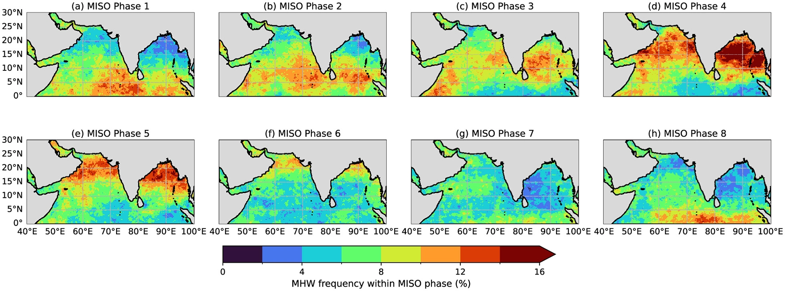
不同 MISO 位相海洋热浪频率（%）的空间分布。（a—h）分别对应 MISO 第 1—8 位相。
Spatial distribution of MHW frequency (%) during different phases of MISO. (a–h) Correspond to MISO phases 1–8, respectively.
海洋热浪频率定义为各 MISO 位相中被判定为海洋热浪的时间步所占百分比。
MHW frequency is defined as the percentage of time steps classified as MHWS within each MISO phase.
除了季内变异，与ENSO相关的年际变异还可以进一步调节MHW的发生(第3节)。
In addition to intraseasonal variability, interannual variability associated with ENSO can further modulate MHW occurrence (Section 3).
为探讨 ENSO—MISO—MHW 相互作用，我们分别计算了 MISO 第 4—5 位相在厄尔尼诺与拉尼娜条件下的海洋热浪频率（图 9）。
To explore ENSO-MISO-MHW interactions, we computed MHW frequency separately for El Niño and La Niña conditions during MISO Phases 4–5 (Figure 9).
与图 4、8 一致，在这些位相中，拉尼娜条件下孟加拉湾海洋热浪频率相对于阿拉伯海更高，类似 PC2+ 型；厄尔尼诺条件则使阿拉伯海相对于孟加拉湾的海洋热浪频率增强，类似 PC1 型。
Consistent with Figures 4, 8, La Niña conditions are associated with higher MHW frequency over the Bay of Bengal relative to the Arabian Sea during these phases, resembling the PC2+ pattern, whereas El Niño conditions favor enhanced MHW frequency over the Arabian Sea compared to the Bay of Bengal, resembling the PC1 pattern.
厄尔尼诺年，北印度洋大部出现全盆地正 SST 异常，阿拉伯海增暖尤为明显（补充图 S10）；这可在受抑制或类似中断期的 MISO 条件（如第 3 位相）下，为该区域海洋热浪发展提供预先条件（Yang et al., 2007; Xie et al., 2009; Abish et al., 2017）。
During El Niño years, basin-wide SST anomalies are positive across much of the North Indian Ocean, with pronounced warming over the Arabian Sea (Supplementary Figure S10), which can precondition the region for MHW development during suppressed/break-like MISO conditions (e.g., Phase 3) (Yang et al., 2007; Xie et al., 2009; Abish et al., 2017).
相反，拉尼娜年的背景态不同（补充图 S11），相关环流异常可使孟加拉湾上空风速降低、蒸发冷却减弱，从而增加局地海洋热浪发展的可能性（Krishnamurthy and Kirtman, 2009）。
Conversely, during La Niña years, the background state differs (Supplementary Figure S11), and the associated circulation anomalies can favor reduced winds and weaker evaporative cooling over the Bay of Bengal, thereby increasing the likelihood of localized MHW development (Krishnamurthy and Kirtman, 2009).
综合而言，这些结果表明季节内（MISO）和年际（ENSO）变率可相互作用，共同塑造北印度洋海洋热浪发生的空间分布。
Together, these results suggest that intraseasonal (MISO) and interannual (ENSO) variability can interact to shape the spatial distribution of North Indian Ocean MHW occurrence.
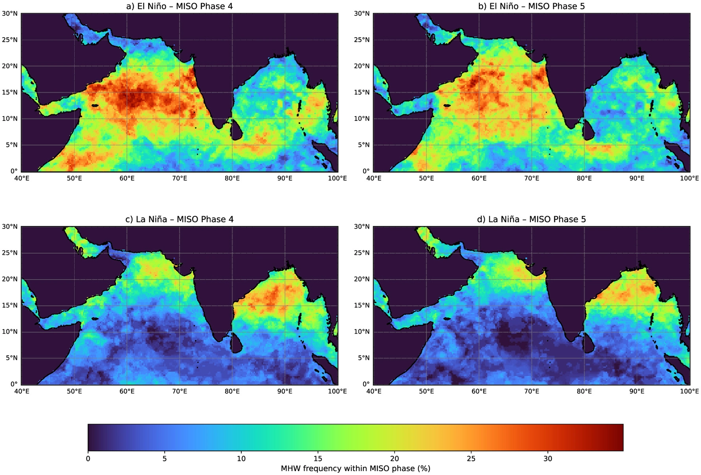
不同 ENSO 条件下 MISO 第 4、5 位相海洋热浪（MHW）频率（%）的空间分布：（a）厄尔尼诺、MISO 第 4 位相；（b）厄尔尼诺、MISO 第 5 位相；（c）拉尼娜、MISO 第 4 位相；（d）拉尼娜、MISO 第 5 位相。
Spatial distribution of marine heatwave (MHW) frequency (%) during MISO Phases 4 and 5 under different ENSO conditions: (a) El Niño during MISO Phase 4, (b) El Niño during MISO Phase 5, (c) La Niña during MISO Phase 4, and (d) La Niña during MISO Phase 5.
6 海洋热浪结束后对夏季风降水的影响
6 The post-marine heatwaves impact on the summer monsoon rainfall
海洋热浪结束后 5 天平均的关键大气变量合成（图 10）与事件发生前呈相反型态，同时印度次大陆降水增强。
The composite of key atmospheric variables averaged over 5 days following the MHW end dates (Figure 10), reveals contrasting patterns compared to those observed prior to the MHW events, with enhanced rainfall over the Indian Subcontinent.
对 PC1 模态而言，北印度洋，尤其是阿拉伯海上空，存在明显的气压负异常（图 10a）。
For the PC1 mode, negative pressure anomalies are evident over the North Indian Ocean, particularly over the Arabian Sea (Figure 10a).
MHW期间的高SST可以缓慢地在海表上方加热空气，增加空气温度。
High SSTs during MHWs can slowly heat the air immediately above the ocean surface, increasing air temperature.
这些较暖空气密度降低并上升，导致高空辐散。
This warmer air becomes less dense and rises, leading to divergence at higher altitudes.
根据质量连续性，这种上升运动会导致地面气压降低。
By mass continuity, this upward motion induces a decrease in surface pressure.
在解释数日后海洋热浪对大气变量的影响时，必须考虑暖空气上升与高层辐散之间的时间滞后。
The time lag between warm air rising and upper-level divergence is important to account for when explaining the impact of MHWs on atmospheric variables a few days later.
对三个不同模态的海洋热浪日进行 SST 与 MSLP 回归分析，结果显示北印度洋大部为负值，表明 SST 与 MSLP 呈反向关系（补充图 S12）。
The regression analysis between SST and MSLP during the MHW days for the three different modes shows negative values across most of the North Indian Ocean, indicating that SST and MSLP are inversely related (Supplementary Figure S12).
异常气压的这种降低有助于增强气候态季风气压梯度——其特征是印度次大陆上空低压、南印度洋上空高压——进而增强季风环流（图 10d）。
This reduction in anomalous pressure helps strengthen the climatological monsoon pressure gradient, characterized by low pressure over the Indian subcontinent and high pressure over the southern Indian Ocean, which, in turn, enhances the monsoon circulation (Figure 10d).
增强的风促进海洋蒸发增加，表现为潜热通量负异常（图 10g），说明海洋将在海洋热浪期间储存的更多热量传递给大气。
These strengthened winds promote increased evaporation over the ocean, as reflected in the negative latent heat flux anomalies (Figure 10g), indicating more heat being transferred from the ocean (which was stored during the MHW event) to the atmosphere.
这种增强的蒸发也支持更大的云层形成，这反过来又限制了进入海表的太阳辐射量(图 10)。
This enhanced evaporation also supports greater cloud formation, which in turn limits the amount of incoming solar radiation reaching the ocean surface (Figure 10).
因此，海洋一方面通过潜热通量散热，另一方面因辐射输入减少而失热，从而有助于终止海洋热浪事件。
As a result, the ocean loses heat both through latent heat flux and reduced radiative input, helping to terminate the MHW event.
这些MHW后大气的调整伴随着印度西部和东北部，孟加拉国，缅甸，孟加拉湾地区(图 10m)上空的降水增强。
These post-MHW atmospheric adjustments are accompanied by enhanced precipitation over western and northeastern India, Bangladesh, Myanmar, and the Bay of Bengal region (Figure 10m).
阿拉伯海蒸发增强可能增加可用水汽，随后水汽被输送至印度西部和中部；异常整层积分水汽输送（IVT）矢量指示了这一过程。
The increased evaporation over the Arabian Sea possibly contributes to greater moisture availability, which is subsequently transported toward western and central India, as indicated by the anomalous vertically integrated water vapor transport (IVT) vectors.
类似地，孟加拉湾蒸发增强可能加强印度东北部、缅甸、孟加拉国及孟加拉湾的水汽辐合，这与指向上述区域的 IVT 增强一致。
Similarly, elevated evaporation over the Bay of Bengal possibly enhances moisture convergence over northeastern India, Myanmar, Bangladesh, and the Bay of Bengal, consistent with strengthened IVT directed toward these regions.
这种空间型提示一种潜在反馈机制：海洋热浪诱发的海气相互作用可在全盆地海洋热浪事件衰减后放大季风降水，这与既往关于 MISO—SST 季风降水相互作用的研究一致（Roxy and Tanimoto, 2007; Zhang L. et al., 2018）。
This spatial pattern suggests a potential feedback mechanism, wherein MHW-induced ocean-atmosphere interactions can amplify monsoon rainfall following the decay of a basin-wide MHW event, consistent with the previous studies on MISO-SST monsoon rainfall interactions (Roxy and Tanimoto, 2007; Zhang L. et al., 2018).
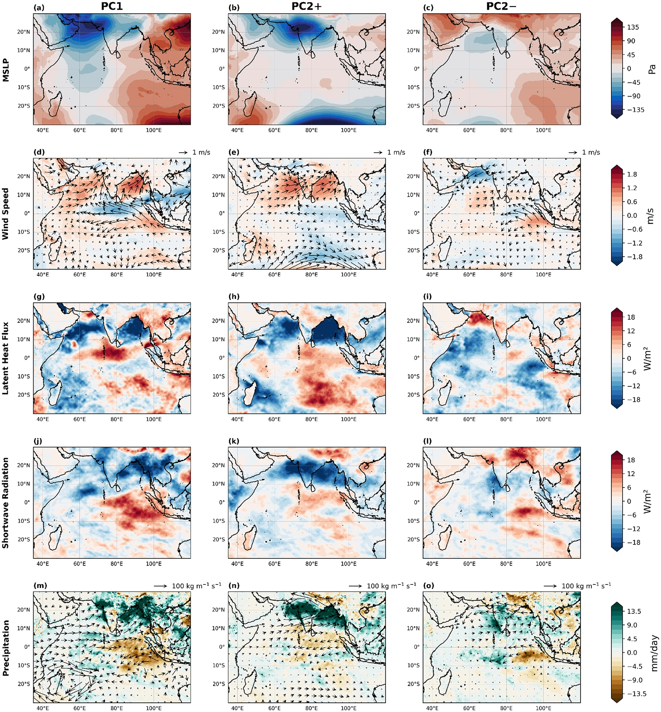
不同模态海洋热浪终止后 5 天平均的合成异常：PC1（左列）、PC2+（中列）、PC2−（右列）。
Composite anomalies averaged over the 5 days following MHW termination for different modes: PC1 (left column), PC2+ (middle column), and PC2− (right column).
各面板依次为：（a—c）海平面气压异常（Pa）；（d—f）10 米风速异常（阴影；m s−1）和风矢量异常（箭头；m s−1）；（g—i）潜热通量异常（W m−2，向下为正）；（j—l）短波辐射异常（W m−2，向下为正）；（m—o）降水异常（阴影；mm day−1）及整层积分水汽（IVT）通量矢量异常（箭头；kg m−1 s−1）。
Panels show (a–c) mean sea level pressure anomalies (Pa), (d–f) 10 m wind speed anomalies (shading; m s−1) with wind vector anomalies (arrows; m s−1) ), (g–i) latent heat flux anomalies (W m−2; positive downward), (j–l) shortwave radiation anomalies (W m−2; positive downward), and (m–o) precipitation anomalies (shading; mm day−1) with vertically integrated water vapor (IVT) flux vector anomalies (arrows; kg m−1 s−1).
PC2+ 海洋热浪事件后的大气异常与 PC1 的恢复过程高度相似。
Post-event atmospheric anomalies for PC2+ MHWs closely resemble the recovery seen in PC1.
孟加拉湾、印度中部和阿拉伯海上空持续存在 MSLP 负异常（图 10b），从而增强经向气压梯度，并使两个海盆的季风风场恢复（图 10e）。
A negative MSLP anomaly persists over the Bay of Bengal, central India, and the Arabian Sea (Figure 10b), enhancing the meridional pressure gradient and reviving monsoon winds across both basins (Figure 10e).
这些较强的风增加潜热释放（图 10h）和云的形成，从而减少入射短波辐射（图 10k）。
These stronger winds increase latent heat release (Figure 10h) and cloud formation, which acts to reduce incoming shortwave radiation (Figure 10k).
湍流和辐射热损失共同促使孟加拉湾暖异常衰减，并终止海洋热浪阶段。
The combination of turbulent and radiative heat loss contributes to the decay of warm anomalies in the Bay of Bengal, terminating the MHW phase.
继PC2+ MHW事件之后，降水主要在印度中部和北部孟加拉湾(图 10n)上空增强。
Following PC2+ MHW events, precipitation intensifies primarily over central India and the northern Bay of Bengal (Figure 10n).
两个海盆的蒸发增强提高大气水汽含量，水汽随后在这些区域辐合；指向印度中部和孟加拉湾北部的 IVT 异常增强体现了这一点。
Increased evaporation from both basins enhances atmospheric moisture, which then converges over these regions, as indicated by strengthened IVT anomalies directed toward central India and the northern Bay of Bengal.
PC2- MHW的终止阶段显示出一些差异。
The termination phase of PC2- MHWs displays some differences.
印度中部和阿拉伯海上空形成范围广泛的气压负异常（图 10c），从而增强季风气流，尤其是阿拉伯海南部及印度南部的季风气流（图 10f）。
A broad negative pressure anomaly forms over central India and the Arabian Sea (Figure 10c), strengthening monsoon flow particularly in the southern Arabian Sea and across southern India (Figure 10f).
然而，阿拉伯海北部和印度北部风速仍较弱，在次大陆上空形成异常气旋性环流。
However, winds remain weak over the northern Arabian Sea and north India, generating an anomalous cyclonic pattern over the subcontinent.
在南部盆地，蒸发量增加(图 10i)，短波辐射(图 10l)减少，加速了海洋热量损失。
In the southern basin, increased evaporation (Figure 10i) and diminished shortwave radiation (Figure 10l) accelerate ocean heat loss.
PC2 负位相事件后的降水异常集中在印度南部、中部以及孟加拉湾部分地区，这些区域受异常气旋性环流影响（图 10o）。
Post-event rainfall anomalies for PC2-negative events are concentrated over southern and central India, as well as parts of the Bay of Bengal, which are the regions influenced by an anomalous cyclonic circulation (Figure 10o).
西印度洋蒸发增强造成的水汽积聚可能为这一降水响应提供水汽，异常 IVT 矢量表明水汽向印度南部输送。
Moisture buildup from enhanced evaporation in the western Indian Ocean likely fuels this rainfall response, with anomalous IVT vectors indicating moisture transport toward southern India.
虽然总体反馈与其他模态相似，但降水南移凸显了季风响应对海洋热浪位置和终止动力过程的空间敏感性。
While the overall feedback resembles that of the other modes, the southward shift in rainfall highlights the spatial sensitivity of monsoon response to MHW positioning and termination dynamics.
此外，降水复合异常，特别是PC1和PC2+的降水异常，与MISO阶段6和7(补充图 S5)期间的特征降水模式非常相似，这通常与印度地区对流活动增强有关。
Moreover, the precipitation composite anomalies, particularly for PC1 and PC2+, closely resemble the characteristic precipitation patterns during MISO Phases 6 and 7 (Supplementary Figure S5), which are typically associated with enhanced convective activity over the Indian region.
此外，我们的分析显示，与PC1和PC2+有关的MHW事件总数中约有33%在MISO阶段6期间终止，这进一步突出了MISO变异与MHW演化在北印度洋的强烈相互作用。
In addition, our analysis reveals that approximately 33% of the total MHW events associated with PC1 and PC2+ terminate during MISO Phase 6, further highlighting a strong interaction between MISO variability and MHW evolution in the North Indian Ocean.
为更详细考察这种相互作用，我们识别了在 MISO 第 6 位相终止的 PC1 和 PC2+ 海洋热浪事件，并计算 MISO 第 6、7 位相相对于无任何海洋热浪活动的 MISO 周期的降水差异。
To examine this interaction in more detail, we identified MHW events that terminate during MISO Phase 6 for PC1 and PC2+ and computed the precipitation differences during MISO Phases 6 and 7 relative to MISO cycles without any MHW activity.
所得合成（补充图 S13）在季节内季风动力活跃位相中，分离出海洋热浪终止对 MISO 降水的潜在影响。
The resulting composites (Supplementary Figure S13) isolate the potential influence of MHW termination on MISO rainfall during a dynamically active phase of the intraseasonal monsoon.
就PC1而言，MISO阶段6和7期间的降水差异表明，印度大部分地区，尤其是印度中部地区出现干燥，同时孟加拉湾东部、孟加拉国和周边地区出现异常湿润。
For PC1, the precipitation differences during MISO Phases 6 and 7 indicate drying over much of India, particularly over central India, accompanied by anomalous wetting over the eastern Bay of Bengal, Bangladesh, and surrounding regions.
相反，PC2+ 事件与古吉拉特邦及邻近阿拉伯海沿岸、印度中部和孟加拉湾北部的异常偏湿有关。
In contrast, PC2+ events are associated with anomalous wetting over Gujarat and the adjacent coastal regions of the Arabian Sea, central India, and the northern Bay of Bengal.
类似地，当以 MISO 第 4、5 位相期间存在海洋热浪为条件时（图略），也得到总体较弱且空间一致性较差的降水差异；这表明海洋热浪在持续期也可能影响 MISO 降水，但这种影响不如终止期稳健。
Similar, though generally weaker and less spatially coherent, precipitation differences are obtained when conditioning on MHW presence during MISO Phases 4 and 5 (not shown), suggesting that MHWs may also influence MISO rainfall during their persistence, albeit less robustly than during their termination.
值得注意的是，尽管这些降水响应与标准 SST—MISO 降水型有一定相似性，但以海洋热浪为条件的合成呈现独特空间结构，反映的是极端且空间相干的海洋增暖作用，而非仅仅背景 SST 变率。
Notably, while these precipitation responses share some similarities with canonical SST-MISO rainfall patterns, the MHW-conditioned composites exhibit distinct spatial structures, reflecting the role of extreme and spatially coherent ocean warming rather than background SST variability alone.
综合而言，这些结果表明，除 MISO 变率会影响海洋热浪演变外，海洋热浪也能调节 MISO 降水。
Together, these results suggest that MHWs can modulate MISO rainfall, in addition to the influence of MISO variability on MHW evolution.
详细调查这些相互作用的物理机制超出了本研究的范围，留待今后工作处理。
A detailed investigation of the physical mechanisms underlying these interactions is beyond the scope of this study and is left for future work.
7 总结和讨论
7 Summary and discussion
MHW一般定义为每天SST异常连续5天或更多天超过使用固定气候态计算出的季节性变化的第90百分位阈值。
MHWs are typically defined as periods when daily SST anomalies exceed the seasonally varying 90th percentile threshold, calculated using a fixed climatology, for five or more consecutive days.
然而，近期研究指出，随着全球 SST 上升，固定基线会人为增大观测到的海洋热浪频率增幅，使“异常”实质上成为“新常态”。为解决这一问题，我们用去趋势 SST 异常定义海洋热浪，从而将内部变率与长期增暖分离，并研究北印度洋海洋热浪的变率、驱动因素和季风影响。
However, recent studies have indicated that using a fixed baseline can artificially raise the observed increase in MHW frequency as global SSTs rise, effectively making the “unusual” the “new normal.” To address this issue, we defined MHWs using detrended SST anomalies, thereby isolating internal variability from long-term warming, and investigated the variability, drivers, and monsoon impacts of MHWs in the North Indian Ocean.
为客观分离海洋热浪变率的主导空间结构，我们对海洋热浪强度进行 EOF 分析。
To objectively isolate the dominant spatial structures of MHW variability, we apply an EOF analysis to MHW intensity.
该方法直接从资料中识别空间相干的大尺度海洋热浪型，无需采用基于空间覆盖范围的任意阈值（例如要求海洋热浪占据海盆的固定比例）。
This approach identifies coherent, large-scale MHW patterns directly from the data, avoiding the need for arbitrary thresholds based on spatial coverage (e.g., requiring MHWs to occupy a fixed fraction of the basin).
海洋热浪强度的 EOF 分析揭示出两个主导变率模态。
The EOF analysis of MHW intensity revealed two dominant modes of variability.
第一模态解释 22% 的总方差，表现为全盆地海洋热浪，其中阿拉伯海信号尤其强。
The first mode, explaining 22% of the total variance, shows basin-wide MHWs with particularly strong signals in the Arabian Sea.
这种模式与北印度洋上空的异常高压和南半球的相应低压相连。
This mode is linked to an anomalous high pressure over the North Indian Ocean and a corresponding low pressure in the Southern Hemisphere.
这种配置削弱气候态气压梯度，从而削弱季风风场，进而抑制蒸发(从而减少蒸发冷却)和云层形成。
This configuration weakens the climatological pressure gradient and hence the monsoon winds, which in turn suppresses evaporation (and hence reducing evaporative cooling) and cloud formation.
因此，短波辐射可更有效地穿透并加热上层海洋，从而促进海洋热浪形成（图 6）。
As a result, shortwave radiation penetrates more effectively, warming the upper ocean and promoting MHWs (Figure 6).
该模态主要与厄尔尼诺成熟期有关，这与既往研究一致：厄尔尼诺通过印度洋全盆模态影响印度洋 SST，从而为海盆尺度海洋热浪的发展提供预先条件（Xie et al., 2009）。
This mode is predominantly associated with the mature phase of El Niño, consistent with previous studies showing that El Niño influences Indian Ocean SSTs through the Indian Ocean Basin Mode, thereby preconditioning the basin for large-scale MHW development (Xie et al., 2009).
第二模态解释 8% 的总方差，呈偶极型：正位相时孟加拉湾出现海洋热浪而阿拉伯海活动受抑，负位相时则相反。
The second mode, accounting for 8% of the total variance, shows a dipole-like pattern where its positive phase is characterized by MHWs in the Bay of Bengal and suppressed activity in the Arabian Sea, while the negative phase exhibits the opposite pattern.
正位相由与 EOF 第一模态类似的机制驱动，但其影响在孟加拉湾上空更为局地化。
The positive phase is driven by mechanisms similar to EOF mode 1, though the effects are more localized over the Bay of Bengal.
负位相时，海洋热浪集中在西印度洋，尤其是索马里沿岸附近。
In the negative phase, MHWs are concentrated over the western Indian Ocean, particularly near the Somali coast.
在这种情况下，季风风减弱也局限于该区域，可能减弱上升流及相关冷却，从而使 SST 升高。
In this case, the weakening of monsoon winds is also confined to the region, potentially reducing upwelling and the associated cooling, thereby allowing SSTs to rise.
有趣的是，与其它模式相比，短波辐射在这种模式中似乎发挥的主导作用较少。
Interestingly, shortwave radiation appears to play a less dominant role in this mode compared to the others.
PC2+在拉尼娜年间更为常见，而PC1在厄尔尼诺年间更为常见。
The PC2+ is found to be more common during the La Niña years, whereas PC1 is found to be more common during El Niño years.
相比 PC1 和 PC2+，PC2− 事件与 ENSO 的联系较弱，仅少数 PC2− 事件发生在厄尔尼诺早期，而 PC1 主要与厄尔尼诺成熟期有关。
In contrast, PC2- events show only a weak association with ENSO compared to PC1 and PC2+, with only a few occurring during the early phase of El Niño, whereas PC1 is primarily associated with the mature phase of El Niño.
重要的是，PC1 虽反映 ENSO 成熟期相关的盆地尺度预先条件，其演变也受季节内季风变率调节；PC2+ 则更强地刻画了演变中的 ENSO 状态与 MISO 动力相互作用所产生的海洋热浪变率。
Importantly, while PC1 reflects basin-scale preconditioning associated with the mature phase of ENSO, its evolution is also modulated by intraseasonal monsoon variability, whereas PC2+ more strongly captures MHW variability arising from the interaction between evolving ENSO states and MISO dynamics.
尤其是，PC2+ 往往发生在拉尼娜发展期，并与 MISO 第 4—5 位相一致。
In particular, PC2+ tends to occur during the developing phase of La Niña and also aligns with MISO phases 4–5.
海洋热浪发生前后的 MISO 位相演变进一步表明，PC1 和 PC2+ 海洋热浪倾向于在 MISO 第 3—4 位相发生，此时海表风较弱、蒸发冷却减弱。
Analysis of MISO phase evolution around MHW onset further shows that PC1 and PC2+ MHWs are preferentially initiated during MISO Phases 3–4, when surface winds are weak and evaporative cooling is reduced.
第 4—5 位相海洋热浪频率持续偏高，反映了上层海洋储热驱动的持续性，即使此时海表强迫已开始恢复。
Elevated MHW frequency during Phases 4–5 reflects persistence driven by upper-ocean heat storage, even as surface forcing begins to recover.
这表明，PC1 和 PC2+ 所代表的海洋热浪并非仅响应大尺度背景强迫，而是受到 ENSO 演变与季节内季风变率共同影响的调节。
This suggests that MHWs represented by PC1 and PC2+ are not solely a response to large-scale background forcing, but are modulated by the combined influence of ENSO evolution and intraseasonal monsoon variability.
这些不同 EOF 模态也以不同方式调节季风降水。
These different EOF modes also modulate monsoon rainfall in distinct ways.
PC1 和 PC2 正位相期间，印度南部往往偏湿而北部相对偏干，这种降水分布通常与 MISO 第 3—4 位相有关。
During the positive phases of PC1 and PC2, southern India tends to experience wetter conditions, while northern India becomes relatively drier, a rainfall distribution commonly associated with MISO phases 3–4.
相比之下，PC2-与印度大半个次大陆的广泛干燥有关。
In contrast, PC2- is linked to widespread dryness across much of the Indian subcontinent.
我们还调查了MHW之后的降水反应，发现PC1事件的终止通常会给印度西北和东北部以及孟加拉国和缅甸带来更多的降水。
We also investigated the post-MHW rainfall response and found that the termination of PC1 events typically brings enhanced rainfall to northwest and northeast India, as well as to Bangladesh and Myanmar.
相比之下，PC2+事件结束后，印度中部的降水增加，而PC2-终止导致印度南部和中部的降水增加。
In contrast, the end of PC2+ events is followed by increased rainfall over central India, while PC2- termination leads to enhanced rainfall over both south and central India.
这些滞后影响可能由中断位相后季风风场恢复所驱动；恢复的风场促进海洋释放海洋热浪事件期间储存的热量和水汽。
These delayed impacts are likely driven by the revival of monsoon winds following a break phase, which promotes the release of oceanic heat and moisture stored during the MHW event.
增强的风使海洋蒸发加强；潜热通量负异常印证了这一点，并表明热量从海洋传向大气。
These strengthened winds enhance evaporation over the ocean, as evidenced by negative latent heat flux anomalies, indicating heat transfer from ocean to atmosphere.
相关水汽通量有利于形成更多云，从而进一步减少入射太阳辐射、稳定海表，并强化向较湿大气条件的转变。
The associated moisture flux contributes to increased cloud formation, which can further reduce incoming solar radiation, stabilizing the ocean surface and reinforcing the transition toward wetter atmospheric conditions.
值得注意的是，约三分之一的 PC1 和 PC2+ 海洋热浪事件终止于 MISO 第 6 位相；这一动力活跃位相以季风环流增强为特征。
Notably, we find that approximately one-third of PC1 and PC2+ MHW events terminate during MISO Phase 6, a dynamically active phase characterized by strengthening monsoon circulation.
以该位相海洋热浪终止为条件的合成显示，相对于无海洋热浪活动的 MISO 周期，MISO 第 6、7 位相存在系统性降水异常；这表明海洋热浪衰减除受 MISO 变率塑造外，也可主动调节季节内季风降水。
Composites conditioned on MHW termination during this phase reveal systematic precipitation anomalies during MISO Phases 6 and 7 relative to MISO cycles without any MHW activity, indicating that MHW decay can actively modulate intraseasonal monsoon rainfall in addition to being shaped by MISO variability.
这一结果为海洋热浪与 MISO 的双向耦合提供证据：季节内季风动力调节海洋热浪生命周期，而海洋热浪衰减又反馈于季风降水。
This result provides evidence for a two-way coupling between MHWs and the MISO, in which intraseasonal monsoon dynamics regulate the lifecycle of MHWs, while MHW decay feeds back onto monsoon rainfall.
虽然这些结果表明海洋热浪衰减可主动调节季节内季风降水，但对其内在物理机制的详细研究超出本文范围，仍是未来工作的重要方向。
Although these results indicate that MHW decay can actively modulate intraseasonal monsoon rainfall, a detailed investigation of the underlying physical mechanisms is beyond the scope of this study and remains an important direction for future work.
我们的发现与 Roxy et al.（2017）强调的机制一致；该研究表明，阿拉伯海和孟加拉湾 SST 增暖在为印度中部极端降水事件提供水汽方面起关键作用。
Our findings are consistent with the mechanisms highlighted by Roxy et al. (2017), who showed that SST warming in the Arabian Sea and the Bay of Bengal plays a critical role in fueling extreme rainfall events over central India.
该研究将此类事件总水汽的近 36% 追溯至阿拉伯海，超过孟加拉湾（26%）与中印度洋（9%）之和。
They traced nearly 36% of the total moisture during such events to the Arabian Sea, more than from the Bay of Bengal (26%) and central Indian Ocean (9%) combined.
这突出表明了SST异常现象的重要性，例如MHW期间的异常现象，作为关键的水分来源。
This underscores the importance of SST anomalies, such as those during MHWs, as a key moisture source.
此外，近几十年来，观测到阿拉伯海水分贡献在统计学上显著增加，这表明MHW等海洋热事件在气候变化下加剧季风极端现象中的作用越来越大。
Additionally, a statistically significant increase in Arabian Sea moisture contribution has been observed over recent decades, suggesting a growing role for oceanic heat events like MHWs in intensifying monsoon extremes under climate change.
总体而言，本研究强调了MHW的空间结构和时间在塑造季风变异性方面的关键作用。
Overall, this study underscores the critical role of both the spatial structure and timing of MHWs in shaping monsoon variability.
其结果对了解和预测气候变暖情况下的区域降水极端现象具有重大影响。
The results have significant implications for understanding and predicting regional rainfall extremes in a warming climate.
既往研究表明，西印度洋增暖往往通过削弱陆海气压梯度及相关季风风场而减少印度次大陆降水（Roxy et al., 2015）。
Previous studies have shown that warming of the western Indian Ocean tends to reduce rainfall over the Indian subcontinent by weakening the land-sea pressure gradient and associated monsoon winds (Roxy et al., 2015).
与此相反，我们的结果表明，印度洋升温，尤其是通过海洋热浪，可以通过增加蒸发增加南亚部分地区的降水量。
In contrast, our results suggest that Indian Ocean warming, particularly through marine heatwaves, can enhance precipitation over parts of South Asia by increasing evaporation.
此外，我们的调查结果表明，MHW、ENSO和MISO之间可能发生相互作用，为今后的研究提出了重要方向。
Moreover, our findings suggest a possible interaction between MHWs, ENSO, and the MISO, raising important directions for future research.
更广泛地说，结果指向大尺度气候模态与季节内变率之间的层级耦合：ENSO 设定印度洋背景热力状态，而 MISO 调节海洋热浪的发生时机、区域表现和终止过程。
More broadly, our results point to a hierarchical coupling between large-scale climate modes and intraseasonal variability, in which ENSO sets the background thermodynamic state of the Indian Ocean, while the MISO modulates the timing, regional expression, and termination of marine heatwaves.
多项研究表明，海气相互作用可影响 MISO 降水（Roxy and Tanimoto, 2007; Ajayamohan et al., 2008; Wang et al., 2009; Lin et al., 2010; Sabeerali et al., 2014; Zhang L. et al., 2018）。
Several studies have shown that the air-sea interaction can influence the MISO precipitation (Roxy and Tanimoto, 2007; Ajayamohan et al., 2008; Wang et al., 2009; Lin et al., 2010; Sabeerali et al., 2014; Zhang L. et al., 2018).
因此，关键问题包括:MHW通过调节SST和大气对流回馈MISO吗?
Therefore, key questions include: Do MHWs feed back onto MISO by modulating SST and atmospheric convection?
海洋热浪能否改变 MISO 各位相的传播速度或强度？
Can MHWs alter the propagation speed or intensity of MISO phases?
海洋热浪是否会改变不同 MISO 位相对应的标准降水型？
Do MHWs shift the canonical rainfall patterns associated with different MISO phases?
它们能否延迟或加速 MISO 位相转换？
Could they delay or accelerate MISO phase transitions?
ENSO 和 IOD 等更大尺度模态如何调节 MISO—海洋热浪关系？
How do larger-scale modes such as ENSO and the IOD modulate the MISO-MHW relationship?
虽然这些问题超出本研究范围，但它们为深化对海气耦合的认识、提高变暖气候下的季风预报技巧开辟了新方向。
While these questions lie beyond the scope of the present study, they open up new directions for advancing our understanding of ocean-atmosphere coupling and improving monsoon forecasting skill in a changing climate.
特别是，由于我们使用去趋势后的 SST异常来定义MHW，未来的研究可以调查在使用包含长期变暖趋势的原始SST时，类似的MHW—MISO相互作用是否持续存在。
In particular, since we define MHWs using detrended SST anomalies, future research could investigate whether similar MHW-MISO interactions persist when using raw SSTs that include long-term warming trends.
综上，基于去趋势 SST 异常识别的北印度洋海洋热浪，是由 ENSO 驱动的盆地尺度预先条件和季节内季风变率共同塑造的动态演变事件，而非长期增暖的简单表现。
Taken together, our results suggest that marine heatwaves in the North Indian Ocean, as identified from detrended SST anomalies, represent dynamically evolving events shaped by ENSO-driven basin-scale preconditioning and intraseasonal monsoon variability, rather than simple manifestations of long-term warming.
数据可用性说明
Data availability statement
本研究的原始成果均包含在正文和补充材料中；进一步咨询可联系通讯作者。
The original contributions presented in the study are included in the article/Supplementary material, further inquiries can be directed to the corresponding author.
作者贡献
Author contributions
LJ：概念构建、数据整理、正式分析、研究、方法学、监督、验证、可视化、初稿撰写。
LJ: Conceptualization, Data curation, Formal analysis, Investigation, Methodology, Supervision, Validation, Visualization, Writing – original draft.
NS：概念构建、方法学、资源、监督、验证、审阅与编辑。
NS: Conceptualization, Methodology, Resources, Supervision, Validation, Writing – review & editing.
SV：概念构建、方法学、验证、审阅与编辑。
SV: Conceptualization, Methodology, Validation, Writing – review & editing.
DD：概念构建、方法学、监督、验证、可视化、审阅与编辑。
DD: Conceptualization, Methodology, Supervision, Validation, Visualization, Writing – review & editing.
RM：概念构建、资源、监督、验证、审阅与编辑。
RM: Conceptualization, Resources, Supervision, Validation, Writing – review & editing.
利益冲突
Conflict of interest
作者声明，本研究开展过程中不存在任何可被视为潜在利益冲突的商业或财务关系。
The author(s) declared that this work was conducted in the absence of any commercial or financial relationships that could be construed as a potential conflict of interest.
生成式 AI 声明
Generative AI statement
作者声明，在本稿件写作过程中使用了生成式 AI。
The author(s) declared that generative AI was used in the creation of this manuscript.
ChatGPT 和 Grammarly 等 AI 工具有时被审慎用于协助文字润色和 Python 代码改进。
AI tools such as ChatGPT and Grammarly were occasionally and mindfully used to assist with writing refinement and Python code refinement.
这些工具没有用于产生科学内容、结果或解释。
These tools were not used to generate scientific content, results, or interpretations.
所有内容均由作者审核，以确保事实准确性和原创性。
All content was reviewed by the author(s) for factual accuracy and originality.
本文图件随附的任何替代文本（alt text）均由 Frontiers 借助人工智能生成；编辑方已尽合理努力确保其准确性，并在可能情况下由作者审核。
Any alternative text (alt text) provided alongside figures in this article has been generated by Frontiers with the support of artificial intelligence and reasonable efforts have been made to ensure accuracy, including review by the authors wherever possible.
如果你发现任何问题，请联系我们。
If you identify any issues, please contact us.
出版者声明
Publisher's note
本文表达的所有观点均仅代表作者，不一定代表作者所属机构、出版者、编辑或审稿人的观点。
All claims expressed in this article are solely those of the authors and do not necessarily represent those of their affiliated organizations, or those of the publisher, the editors and the reviewers.
出版者不保证或认可本文可能评价的任何产品，亦不保证或认可其制造商可能提出的任何主张。
Any product that may be evaluated in this article, or claim that may be made by its manufacturer, is not guaranteed or endorsed by the publisher.
补充材料
Supplementary material
本文补充材料可在线获取：https://www.frontiersin.org/articles/10.3389/fclim.2026.1801667/full#supplementary-material
The Supplementary Material for this article can be found online at: https://www.frontiersin.org/articles/10.3389/fclim.2026.1801667/full#supplementary-material
经费支持
Funding
作者宣称，为这项工作和(或)其出版获得了资金支持。
The author(s) declared that financial support was received for this work and/or its publication.
本研究得到英国自然环境研究委员会资助［项目 NE/S007210/1］。
This work was supported by the Natural Environment Research Council [Grant NE/S007210/1].
DD 得到印度理工学院布巴内斯瓦尔分校种子基金资助［项目 RP426］。
DD was supported by the IIT Bhubaneswar seed grant [Grant RP426].
补充材料
Supplementary Material
1 偏相关分析
1 Partial correlation analysis
为从 ENSO 影响中分离偶极模态指数（DMI）与海洋热浪强度主成分（PC1 和 PC2）之间的关系，我们在控制 Niño 3.4 的条件下计算了偏相关。
To isolate the relationship between the Dipole Mode Index (DMI) and the principal components (PC1 and PC2) of MHW intensity from the influence of ENSO, we computed the partial correlation controlling for Niño3.4.
偏相关系数采用以下标准公式计算：
The partial correlation coefficient was calculated using the standard formula:
rxy·z = (rxy − rxz ryz) / √[(1 − rxz²)(1 − ryz²)] （S1）
rxy·z = (rxy − rxz ryz) / √[(1 − rxz²)(1 − ryz²)] (S1)
其中，rxy 为 DMI（x）与 PC（y）的皮尔逊相关，rxz 为 DMI 与 Niño 3.4（z）的相关，ryz 为 PC 与 Niño 3.4 的相关。
where rxy is the Pearson correlation between DMI (x) and PC (y), rxz between DMI and Niño3.4 (z), and ryz between PC and Niño3.4.
该系数量化了去除 Niño 3.4 线性影响后 DMI 与 PC 的直接关联。
This quantifies the direct association between DMI and PC after removing the linear influence of Niño3.4.
2 补充表和补充图
2 Supplementary tables and figures
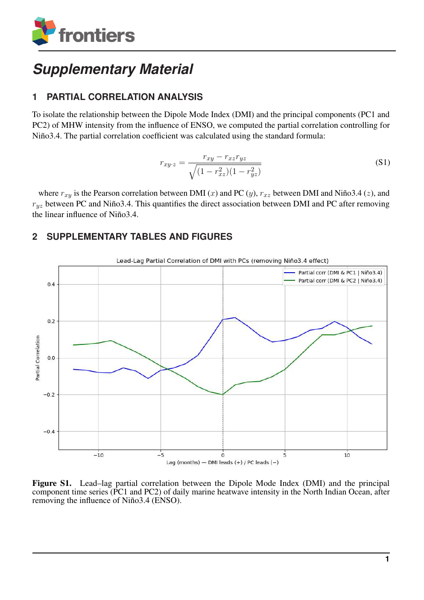
去除 Niño 3.4（ENSO）影响后，偶极模态指数（DMI）与北印度洋逐日海洋热浪强度主成分时间序列（PC1、PC2）之间的超前—滞后偏相关。
Lead–lag partial correlation between the Dipole Mode Index (DMI) and the principal component time series (PC1 and PC2) of daily marine heatwave intensity in the North Indian Ocean, after removing the influence of Niño3.4 (ENSO).
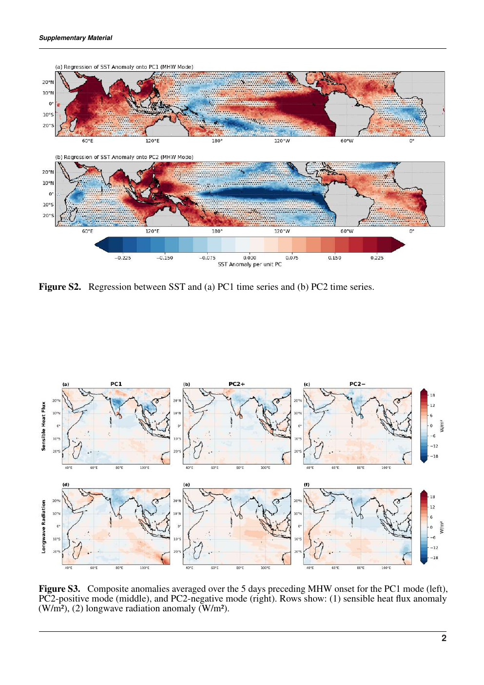
SST 与（a）PC1 时间序列和（b）PC2 时间序列的回归。
Regression between SST and (a) PC1 time series and (b) PC2 time series.
海洋热浪发生前 5 天平均的合成异常：PC1 模态（左）、PC2 正位相模态（中）和 PC2 负位相模态（右）。
Composite anomalies averaged over the 5 days preceding MHW onset for the PC1 mode (left), PC2-positive mode (middle), and PC2-negative mode (right).
各行依次为：（1）感热通量异常（W/m²）；（2）长波辐射异常（W/m²）。
Rows show: (1) sensible heat flux anomaly (W/m²), (2) longwave radiation anomaly (W/m²).
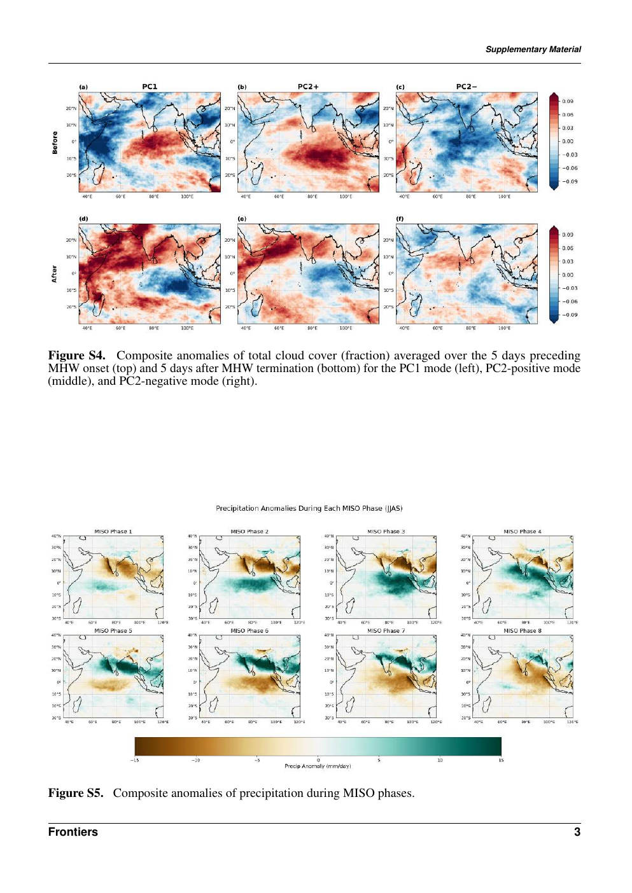
PC1 模态（左）、PC2 正位相模态（中）和 PC2 负位相模态（右）在海洋热浪发生前 5 天（上）及终止后 5 天（下）平均的总云量（比例）合成异常。
Composite anomalies of total cloud cover (fraction) averaged over the 5 days preceding MHW onset (top) and 5 days after MHW termination (bottom) for the PC1 mode (left), PC2-positive mode (middle), and PC2-negative mode (right).
MISO 各位相的降水合成异常。
Composite anomalies of precipitation during MISO phases.
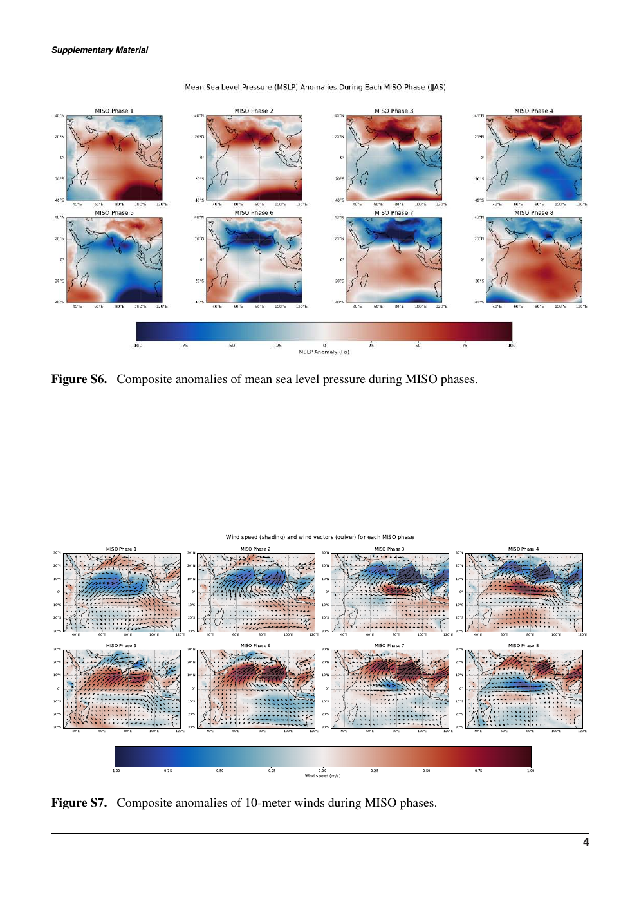
MISO 各位相的海平面气压合成异常。
Composite anomalies of mean sea level pressure during MISO phases.
MISO 各位相的 10 米风合成异常。
Composite anomalies of 10-meter winds during MISO phases.
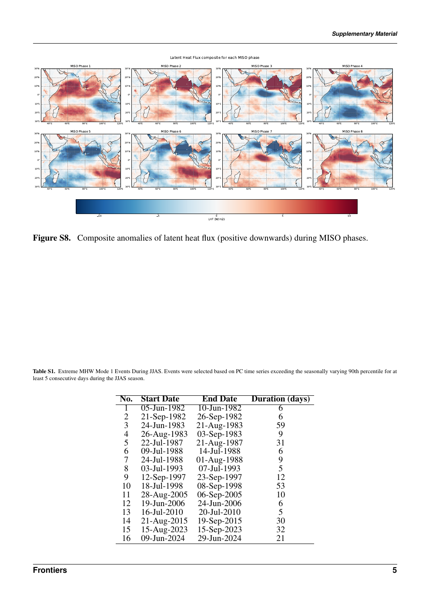
MISO 各位相的潜热通量合成异常（向下为正）。
Composite anomalies of latent heat flux (positive downwards) during MISO phases.
JJAS 期间模式 1 极端海洋热浪事件。
Extreme MHW Mode 1 Events During JJAS.
事件依据 JJAS 季节中 PC 时间序列连续至少 5 天超过随季节变化的第 90 百分位来选取。
Events were selected based on PC time series exceeding the seasonally varying 90th percentile for at least 5 consecutive days during the JJAS season.
编号 | 开始日期 | 结束日期 | 持续时间（天）
No. | Start Date | End Date | Duration (days)
| 编号 No. | 开始日期 Start Date | 结束日期 End Date | 持续时间（天） Duration (days) |
|---|---|---|---|
| 1 | 05-Jun-1982 | 10-Jun-1982 | 6 |
| 2 | 21-Sep-1982 | 26-Sep-1982 | 6 |
| 3 | 24-Jun-1983 | 21-Aug-1983 | 59 |
| 4 | 26-Aug-1983 | 03-Sep-1983 | 9 |
| 5 | 22-Jul-1987 | 21-Aug-1987 | 31 |
| 6 | 09-Jul-1988 | 14-Jul-1988 | 6 |
| 7 | 24-Jul-1988 | 01-Aug-1988 | 9 |
| 8 | 03-Jul-1993 | 07-Jul-1993 | 5 |
| 9 | 12-Sep-1997 | 23-Sep-1997 | 12 |
| 10 | 18-Jul-1998 | 08-Sep-1998 | 53 |
| 11 | 28-Aug-2005 | 06-Sep-2005 | 10 |
| 12 | 19-Jun-2006 | 24-Jun-2006 | 6 |
| 13 | 16-Jul-2010 | 20-Jul-2010 | 5 |
| 14 | 21-Aug-2015 | 19-Sep-2015 | 30 |
| 15 | 15-Aug-2023 | 15-Sep-2023 | 32 |
| 16 | 09-Jun-2024 | 29-Jun-2024 | 21 |
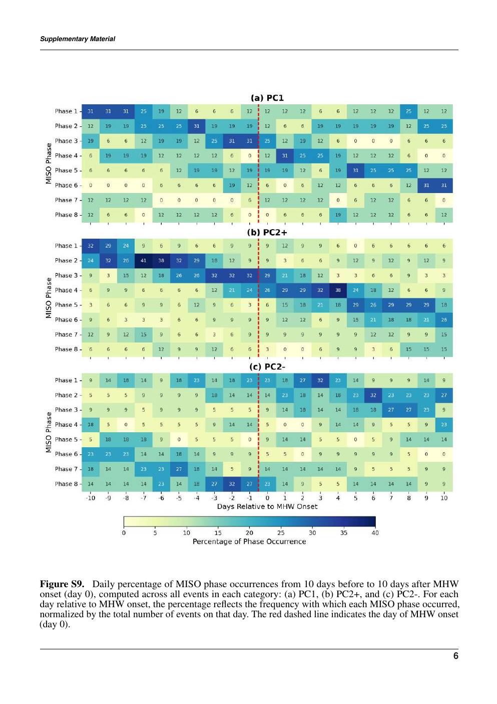
各类别全部事件中，海洋热浪发生前 10 天至发生后 10 天各 MISO 位相逐日出现百分比（第 0 天为发生日）：（a）PC1；（b）PC2+；（c）PC2−。
Daily percentage of MISO phase occurrences from 10 days before to 10 days after MHW onset (day 0), computed across all events in each category: (a) PC1, (b) PC2+, and (c) PC2−.
对海洋热浪发生日前后的每一天，该百分比表示各 MISO 位相出现的频率，并以当日事件总数归一化。
For each day relative to MHW onset, the percentage reflects the frequency with which each MISO phase occurred, normalized by the total number of events on that day.
红色虚线表示海洋热浪发生日（第 0 天）。
The red dashed line indicates the day of MHW onset (day 0).
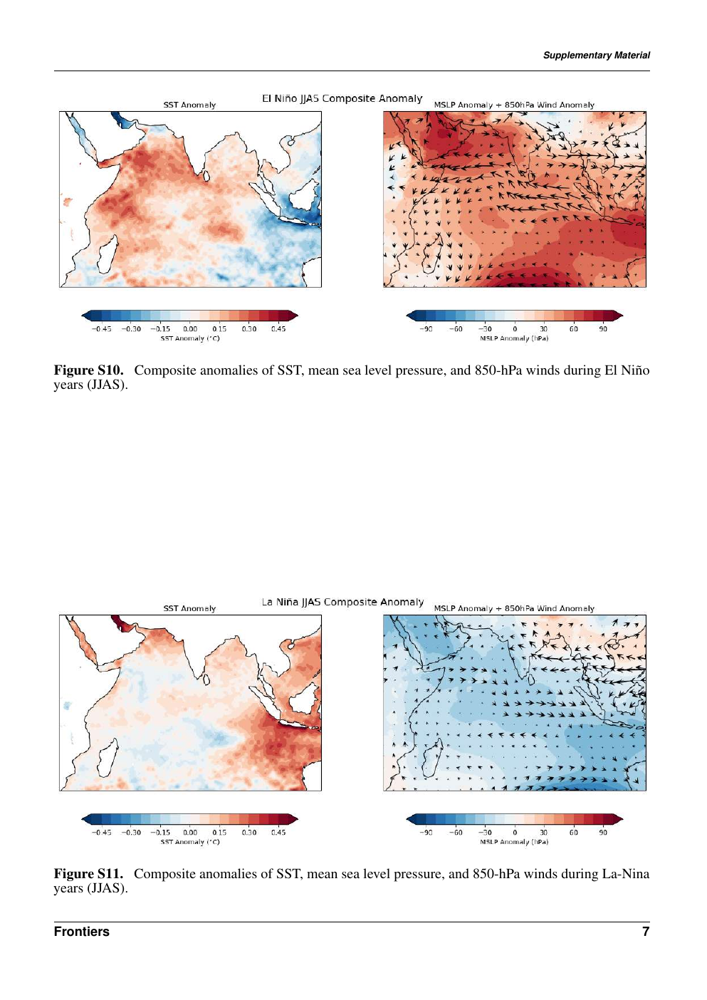
厄尔尼诺年（JJAS）的 SST、海平面气压和 850 hPa 风合成异常。
Composite anomalies of SST, mean sea level pressure, and 850-hPa winds during El Niño years (JJAS).
拉尼娜年（JJAS）的 SST、海平面气压和 850 hPa 风合成异常。
Composite anomalies of SST, mean sea level pressure, and 850-hPa winds during La Niña years (JJAS).
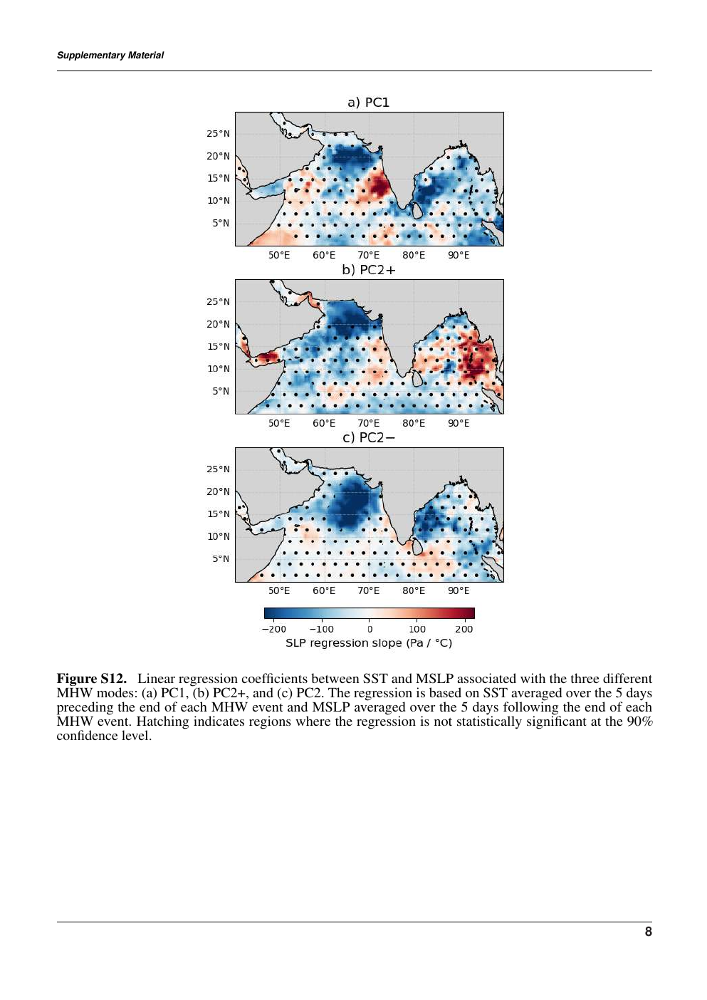
三种海洋热浪模态对应的 SST 与 MSLP 线性回归系数：（a）PC1；（b）PC2+；（c）PC2−。
Linear regression coefficients between SST and MSLP associated with the three different MHW modes: (a) PC1, (b) PC2+, and (c) PC2−.
回归采用每次海洋热浪事件结束前 5 天平均的 SST，以及事件结束后 5 天平均的 MSLP。
The regression is based on SST averaged over the 5 days preceding the end of each MHW event and MSLP averaged over the 5 days following the end of each MHW event.
阴影线表示回归在 90% 置信水平上未达到统计显著性的区域。
Hatching indicates regions where the regression is not statistically significant at the 90% confidence level.
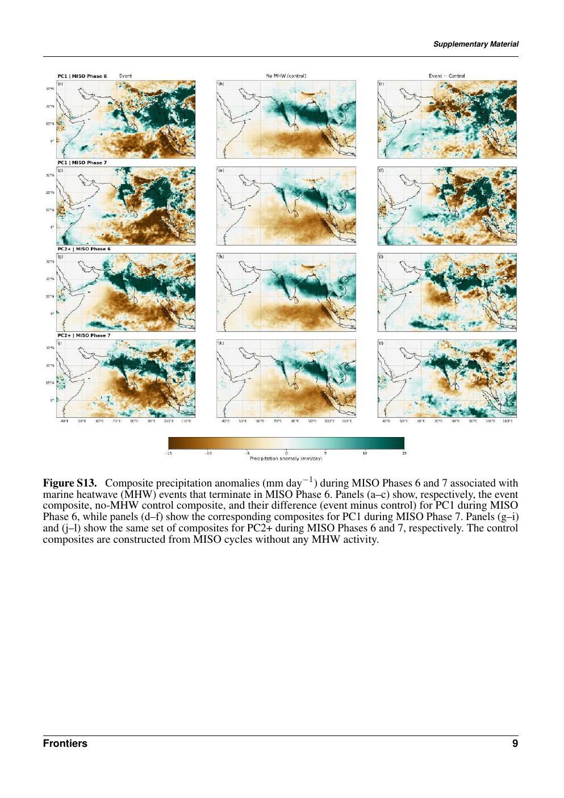
终止于 MISO 第 6 位相的海洋热浪（MHW）事件所对应的 MISO 第 6、7 位相降水合成异常（mm day−1）。
Composite precipitation anomalies (mm day−1) during MISO Phases 6 and 7 associated with marine heatwave (MHW) events that terminate in MISO Phase 6.
面板（a—c）依次为 MISO 第 6 位相 PC1 的事件合成、无海洋热浪控制合成及二者之差（事件减控制）；面板（d—f）为 MISO 第 7 位相 PC1 的相应合成。
Panels (a–c) show, respectively, the event composite, no-MHW control composite, and their difference (event minus control) for PC1 during MISO Phase 6, while panels (d–f) show the corresponding composites for PC1 during MISO Phase 7.
面板（g—i）和（j—l）分别显示 MISO 第 6、7 位相 PC2+ 的同一组合成。
Panels (g–i) and (j–l) show the same set of composites for PC2+ during MISO Phases 6 and 7, respectively.
控制合成由没有任何海洋热浪活动的 MISO 周期构建。
The control composites are constructed from MISO cycles without any MHW activity.
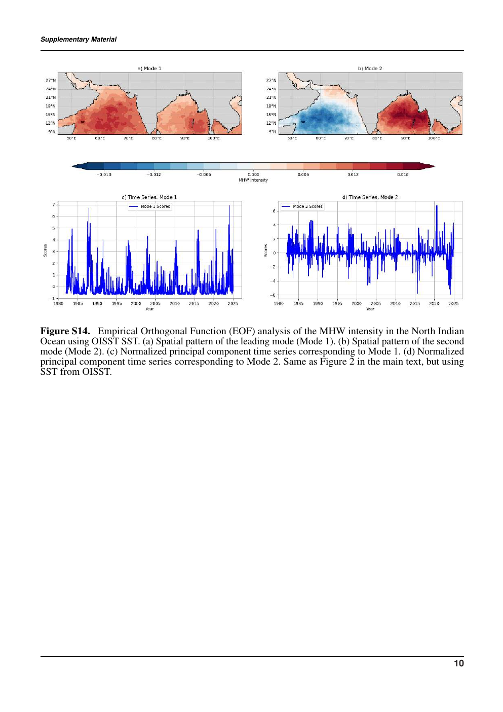
采用 OISST SST 对北印度洋海洋热浪强度进行经验正交函数（EOF）分析。
Empirical Orthogonal Function (EOF) analysis of the MHW intensity in the North Indian Ocean using OISST SST.
（a）第一模态（模式 1）的空间型。
(a) Spatial pattern of the leading mode (Mode 1).
（b）第二模态（模式 2）的空间型。
(b) Spatial pattern of the second mode (Mode 2).
（c）模式 1 对应的标准化主成分时间序列。
(c) Normalized principal component time series corresponding to Mode 1.
（d）模式 2 对应的标准化主成分时间序列。
(d) Normalized principal component time series corresponding to Mode 2.
与正文图 2 相同，但采用 OISST 的 SST。
Same as Figure 2 in the main text, but using SST from OISST.
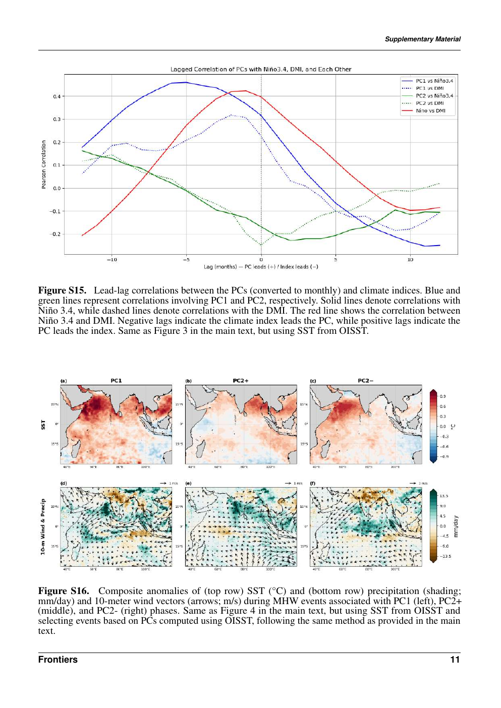
PC（转换为月尺度）与气候指数之间的超前—滞后相关。
Lead-lag correlations between the PCs (converted to monthly) and climate indices.
蓝线和绿线分别表示涉及 PC1 和 PC2 的相关。
Blue and green lines represent correlations involving PC1 and PC2, respectively.
实线表示与 Niño 3.4 的相关，虚线表示与 DMI 的相关。
Solid lines denote correlations with Niño 3.4, while dashed lines denote correlations with the DMI.
红线表示 Niño 3.4 与 DMI 的相关。
The red line shows the correlation between Niño 3.4 and DMI.
负滞后表示气候指数超前 PC，正滞后表示 PC 超前指数。
Negative lags indicate the climate index leads the PC, while positive lags indicate the PC leads the index.
与正文图 3 相同，但采用 OISST 的 SST。
Same as Figure 3 in the main text, but using SST from OISST.
与 PC1（左）、PC2+（中）和 PC2−（右）位相有关的海洋热浪事件期间，（上排）SST（°C）以及（下排）降水（阴影；mm/day）和 10 米风矢量（箭头；m/s）的合成异常。
Composite anomalies of (top row) SST (°C) and (bottom row) precipitation (shading; mm/day) and 10-meter wind vectors (arrows; m/s) during MHW events associated with PC1 (left), PC2+ (middle), and PC2− (right) phases.
与正文图 4 相同，但采用 OISST 的 SST，并按照正文所述相同方法，根据用 OISST 计算的 PC 选取事件。
Same as Figure 4 in the main text, but using SST from OISST and selecting events based on PCs computed using OISST, following the same method as provided in the main text.
JJAS 期间模式 2 正位相极端海洋热浪事件。
Extreme MHW Mode 2 Positive Events During JJAS.
事件依据 JJAS 季节中 PC2 时间序列连续至少 5 天超过随季节变化的第 90 百分位来选取。
Events were selected based on PC2 time series exceeding the seasonally varying 90th percentile for at least 5 consecutive days during the JJAS season.
编号 | 开始日期 | 结束日期 | 持续时间（天）
No. | Start Date | End Date | Duration (days)
| 编号 No. | 开始日期 Start Date | 结束日期 End Date | 持续时间（天） Duration (days) |
|---|---|---|---|
| 1 | 08-Aug-1982 | 12-Aug-1982 | 5 |
| 2 | 11-Jun-1983 | 23-Jun-1983 | 13 |
| 3 | 13-Sep-1983 | 29-Sep-1983 | 17 |
| 4 | 26-Jun-1987 | 07-Jul-1987 | 12 |
| 5 | 03-Aug-1988 | 22-Aug-1988 | 20 |
| 6 | 30-Aug-1988 | 20-Sep-1988 | 22 |
| 7 | 07-Jul-1991 | 17-Jul-1991 | 11 |
| 8 | 06-Jun-1992 | 15-Jun-1992 | 10 |
| 9 | 08-Jul-1993 | 13-Jul-1993 | 6 |
| 10 | 29-Jul-1993 | 03-Aug-1993 | 6 |
| 11 | 09-Aug-1993 | 15-Aug-1993 | 7 |
| 12 | 08-Jul-1996 | 15-Jul-1996 | 8 |
| 13 | 20-Jul-1996 | 24-Jul-1996 | 5 |
| 14 | 18-Aug-1996 | 23-Aug-1996 | 6 |
| 15 | 14-Jun-1998 | 07-Jul-1998 | 24 |
| 16 | 18-Sep-2001 | 23-Sep-2001 | 6 |
| 17 | 14-Jun-2002 | 22-Jun-2002 | 9 |
| 18 | 29-Jun-2002 | 23-Jul-2002 | 25 |
| 19 | 14-Jun-2005 | 23-Jun-2005 | 10 |
| 20 | 28-Jun-2005 | 04-Jul-2005 | 7 |
| 21 | 13-Jul-2005 | 24-Jul-2005 | 12 |
| 22 | 19-Jun-2007 | 24-Jun-2007 | 6 |
| 23 | 25-Jul-2007 | 02-Aug-2007 | 9 |
| 24 | 09-Jun-2010 | 15-Jun-2010 | 7 |
| 25 | 17-Aug-2010 | 30-Aug-2010 | 14 |
| 26 | 26-Aug-2016 | 30-Aug-2016 | 5 |
| 27 | 09-Sep-2017 | 15-Sep-2017 | 7 |
| 28 | 01-Jul-2020 | 09-Jul-2020 | 9 |
| 29 | 17-Jul-2020 | 17-Aug-2020 | 32 |
| 30 | 22-Aug-2020 | 25-Sep-2020 | 35 |
| 31 | 03-Jun-2021 | 07-Jun-2021 | 5 |
| 32 | 27-Jul-2022 | 07-Aug-2022 | 12 |
| 33 | 29-Aug-2022 | 08-Sep-2022 | 11 |
| 34 | 13-Aug-2024 | 22-Aug-2024 | 10 |
JJAS 期间模式 2 负位相极端海洋热浪事件。
Extreme MHW Mode 2 Negative Events During JJAS.
事件依据 JJAS 季节中 PC2 时间序列连续至少 5 天低于随季节变化的第 10 百分位来选取。
Events were selected based on PC2 time series falling below the seasonally varying 10th percentile for at least 5 consecutive days during the JJAS season.
编号 | 开始日期 | 结束日期 | 持续时间（天）
No. | Start Date | End Date | Duration (days)
| 编号 No. | 开始日期 Start Date | 结束日期 End Date | 持续时间（天） Duration (days) |
|---|---|---|---|
| 1 | 21-Jun-1982 | 28-Jul-1982 | 38 |
| 2 | 27-Aug-1982 | 31-Aug-1982 | 5 |
| 3 | 04-Jun-1983 | 08-Jun-1983 | 5 |
| 4 | 10-Sep-1987 | 25-Sep-1987 | 16 |
| 5 | 17-Jun-1988 | 21-Jun-1988 | 5 |
| 6 | 18-Aug-1990 | 22-Aug-1990 | 5 |
| 7 | 03-Jul-1992 | 14-Jul-1992 | 12 |
| 8 | 18-Jul-1992 | 22-Jul-1992 | 5 |
| 9 | 29-Jun-1995 | 04-Jul-1995 | 6 |
| 10 | 06-Jun-1997 | 03-Jul-1997 | 28 |
| 11 | 10-Jul-1997 | 22-Jul-1997 | 13 |
| 12 | 04-Jun-1998 | 10-Jun-1998 | 7 |
| 13 | 24-Aug-2006 | 11-Sep-2006 | 19 |
| 14 | 17-Jun-2009 | 02-Jul-2009 | 16 |
| 15 | 22-Sep-2009 | 27-Sep-2009 | 6 |
| 16 | 05-Aug-2011 | 19-Aug-2011 | 15 |
| 17 | 21-Jul-2012 | 25-Jul-2012 | 5 |
| 18 | 29-Jul-2012 | 14-Aug-2012 | 17 |
| 19 | 03-Sep-2013 | 08-Sep-2013 | 6 |
| 20 | 02-Aug-2015 | 07-Aug-2015 | 6 |
| 21 | 14-Sep-2018 | 19-Sep-2018 | 6 |
| 22 | 05-Jul-2024 | 13-Jul-2024 | 9 |